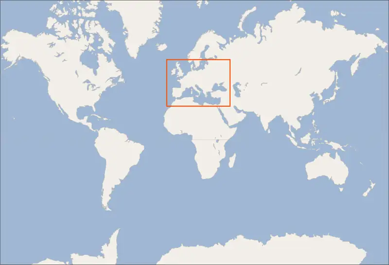
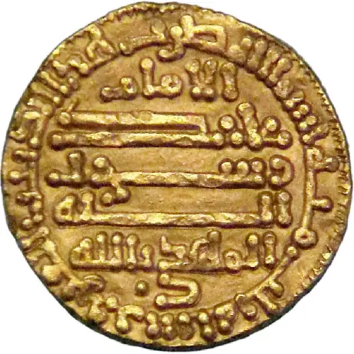

Chapter 13: The Post-Roman West and the Crusading Movement¶
Introduction¶
![An image of a painting is shown set in the desert with sparse trees, dry rocky soil, and a city seen in the far right background. In the scene, a red carpet with gold fringes is set on a platform and a man with a long black beard, flowing white robes with gold stitching at the ends and a turban sits holding a gold scepter in his left hand. He is surrounded on his left and behind him with others in long robes, beards, and turbans. One man has a bowl-shaped haircut and is holding a tall scepter with a cross at the top. A person in blue, green, and red clothing with a feather in his bright red cap is seen squatting to the left of the seated figure holding a small, gold, open chest with objects inside. He has long golden hair and looks forward. Behind him is a person in long blue and red clothing, short hair, holding a white bird on their arm with spread wings. In front of the seated man in the middle forefront of the painting a person kneels in long white, blue, and red clothing, shoes, and a white turban with gold headband pointing to the right while two smaller, barefoot figures dressed in white robes hang on to the figure with frightened expressions. A black dog is seen between two of the figures. Two other dogs are seen running and jumping in the right of the painting, one black and white while the other is golden brown. Behind the kneeling figure three horses are seen, white, brown, and black, with the two in front with riders. The horse in front wears a gold cape with gold reins and has a black mane. His black bearded rider wears gold robes and dark pants with a winged helmet on his head. The rider behind his wears a pointed helmet and wields an axe in the air. Two soldiers in red and black robes, helmets, and swords and shields struggle in the background with the third horse.](img/osx-worldhist-a13-00-charlemag.webp)
Western Afro-Eurasia faced a number of challenges in the early Middle Ages, the period from about 500 to 1000 CE. With the collapse of Roman authority came a time of political instability and insecurity. Cities declined, and institutions of learning weakened. Western Europe became increasingly rural. Because there was no longer a strong centralized state to develop and police the roads, travel became more difficult and more dangerous, harming commerce. However, this is not the whole story. Trade and urban life flourished in the early Islamic kingdoms, which eventually extended from Spain to India. The Byzantine Greeks maintained some classical traditions, and their capital in Constantinople was a center of global trade for centuries. Germanic kings sought to form new alliances with Christian leaders and participate in world trade and diplomacy.
Perhaps no figure better exemplifies the merging of cultures in western Europe than Charlemagne, a Germanic ruler who reigned from 768 to 814. Charlemagne dreamed of reviving the Roman world in terms of territory, education, and art. Despite his belief in spreading Christianity through conquest, he sent embassies to Muslim leaders and even received the sumptuous gift of an elephant from the Abbasid ruler Harun al-Rashid in 802 (Figure 13.1). It might be tempting to see this period as one of just conflict, but as Charlemagne’s reign demonstrates, it was also a dynamic time of merging cultures and social transformation.
![A timeline of events in this chapter is shown. 552: Radegund founds Monastery of the Holy Cross; an image of a woman in long robes sitting holding a book on a richly decorated background is shown. 800: Charlemagne crowned first Holy Roman Emperor; an image of a bearded man in long gold robes and highly decorated crown is shown holding an orb with a cross and a sword with emblems across the top. 910: Fatimid Caliphate formed. 910: Cluniac reform begins; an image of many people inside a towered, richly colored castle is shown with script across the top. 1054: Great Schism. 1095: Council of Clermont convenes; an image of dozens of people in a variety of clothing is shown with arms outstretched toward a figure in black standing at the top of the steps of a building wearing long black robes with buildings and a large statue of a horse in the background. 1099: Crusaders capture Jerusalem. 1200: Borgund Stave Church built; a gray image of a multi-tiered building is shown with curved projections at the corners, windows along the bottom, and people walking toward it with mountains in the background. 1291: Muslims conquer last of the crusading states.](img/osx-worldhist-a13-00-timeline.webp)

13.1 The Post-Roman West in the Early Middle Ages¶
Learning Objectives
By the end of this section, you will be able to:
- Analyze the foundations of medieval society that emerged in the post-Roman world
- Define feudalism in western Europe
- Describe the role of religion in medieval European culture and society
- Discuss the establishment of Muslim rule in western Europe and the religiously diverse society in Spain
Of all the regions in the post-Roman world, western Europe experienced arguably the most dramatic change. Its political order fragmented under Germanic warlords empowered mainly by their ability to provide loot for their followers. In this world of soldiers, the Roman church, directed by the pope, worked to secure military assistance from kings and convert various groups to Christianity. The church’s goal was to ensure that its vision of Christian beliefs and practices eclipsed those of other sects such as the Arians, Christians who questioned the Roman church’s basic tenet that Jesus was divine. The merging of these two antithetical cultures—the religious and the military—helped prepare the ground for a new civilization we call the medieval culture, which emerged between the end of Rome and the rise of the modern world.
Europe after the Roman Empire¶
There was no exact date when the Roman Empire fell, and the eastern half of the empire did not collapse until the fifteenth century. In fact, the Germanic peoples who settled in the former Roman Empire were not hostile to its culture, so in some places, Roman culture lasted longer than Roman political authority. Latin remained the language of the educated, for example, and Germanic peoples gradually adopted the Latin alphabet for their own languages, including English. Traditionally, though, the end of the empire is fixed at 476, when a German general named Odoacer deposed the emperor Romulus Augustulus and established himself not as a Roman emperor but as King of Italy. Even that date may be arbitrary, but by the late fifth century, traditional Roman authority had ceased to be the basis of political power in much of western Europe.
German Successor States¶
What replaced Roman political authority was the authority of the successor kingdoms (Figure 13.4). The Germanic peoples and the Roman population they conquered were able to create a new society by blending cultural traditions—a process called acculturation—in three ways. First, conversion to Christianity helped reduce differences between the two groups. Second, the Christian Church and the Roman aristocracy offered a useful example of bureaucratic organization and diplomacy that the successor kingdoms adopted. Finally, the erosion of Roman society enabled a new society to emerge in the Middle Ages. Although other Germanic kingdoms existed, those established by the Franks, Ostrogoths, and Visigoths demonstrate these three forms of acculturation most vividly.
![A map is shown with land highlighted beige with blue and gray lines crisscrossing the land throughout the map while water is highlighted blue. The Gulf of Bathnia, the Gulf of Finland, the Baltic Sea, Skagerrak, Kattegat, Vanern, and the North Sea are labelled in the north of the map. The Irish Sea, the Celtic Sea, the English Channel, the Atlantic Ocean, and the Bay of Biscay are labelled in the west. The Adriatic Sea, the Tyrrhenian Sea, the Mediterranean Sea, The Ionian Sea, the Dardanelle, and the Aegean Sea are labelled in the south while the Sea of Azov, the Black Sea, and the Bosporus are labelled in the eastern regions. The map is titled “Successor Kingdoms After the Collapse of the Western Roman Empire.” A section of the map in the southeast is highlighted pink and labelled “Eastern Roman Empire.” The pink area runs from the south of the map, up along the coast of the Mediterranean Sea, heads west to the Aegean Sea and the Dardanelle and northwest to the Adriatic Sea. On the east it borders the Black Sea. A very tiny area is highlighted pink at the northern border of the Black Sea. Most of the land shown toward the west is highlighted orange indicating “Successor Kingdoms.” These are labelled, from north to south: Picts, Danes, Scots, Angles, Saxons, Frisians, Jules, Thuringians, Franks, Britons, Syagrius, Alamanni, Rugii, Ostrogoths, Gepids, Burgundians, Nepos, Suebi, Visigoths, Odoacer, and Vandals.](img/osx-worldhist-a13-01-m-weurasia.webp)
“German” was the term Romans used for all the peoples beyond their northern borders, and for them, it was interchangeable with “barbarian,” meaning not Romanized, although there was a great deal of cultural exchange between the two groups. The relationship between the term “German” and the peoples to whom it has been applied is complex. Some of those who invaded the Roman Empire did not speak a Germanic language at all, such as the Huns and Avars. There were few rigid ethnic boundaries between the groups, and the armies of any leader often included warriors from other tribes.
The Germanic peoples generally did not read or write and instead transmitted information and traditions orally. Famous tales that eventually found their way into written form, such as the Song of Hildebrand and the Song of the Nibelungs, had their beginnings as spoken epics. Oral culture celebrating warriors facing their fate on the battlefield and scornful queens plotting revenge reflected real possibilities in this society.
Link to Learning
The Anglo-Saxon peoples who settled in the British Isles, a mix of many cultures including Germanic, are famous for their literary output, both in Latin and in their own language, now called Old English. In particular, they loved riddles. The following links present an Anglo-Saxon riddle 1 and riddle 2 related to food. Can you guess the answers?
Across all Germanic societies, warfare was an important tool for building social prestige. There were no formal hierarchies, so advancement was possible for any willing to serve a powerful chieftain or king. In return, leaders promised loot and the chance to do great deeds. A king who could not ensure material or social resources would lose followers and could not expect to be obeyed. While gold and glory motivated fighters and kings alike, Germanic law and custom tried to limit the destructive cycles of violence by instituting a “blood price” or wergild, under which the injured were compensated according to their social status. These laws tell us much about Germanic society. Chieftains and men of fighting age carried a higher blood price than older men, for example, and women of childbearing age were valued more than older women.
Women were often responsible for running the household and doing the bulk of the farming work, especially when men were called to fight or travel. Men might hunt, but their contributions were often the spoils of war, including enslaved people captured in battle who then worked in the household. Germanic society was fully patriarchal, and tribes like the Alemanni beat women whose clothes were deemed immodest (showing the leg above the knee). Germans were also often polygynous; men might have multiple wives at once and be able to divorce at will, while women’s options were severely limited.
The Germans were polytheistic, worshipping various deities such as Wodan, a god of war, wisdom, and death, and his consort Frigg, a goddess of motherhood, marriage, and magic. By the third century, individual Germans were already converting to Christianity. Many, like the Goths and Vandals, adopted Arian Christianity, adhering to the teaching that Jesus and the Father were not identical entities. Once within the Roman Empire, they encountered competing forms of the faith that could become a source of further conflict with Christians and non-Christians alike.
As an example of acculturation, Theodoric the Great, king of the Ostrogoths, was one of the most dynamic leaders of the post-Roman world. When he became King of Italy in 493, he relied on Roman aristocrats to administer his kingdom, such as the scholar and writer Cassiodorus and the historian and philosopher Boethius. Theodoric also rebuilt Roman infrastructure, including repairing aqueducts and city walls in his kingdom. He used diplomacy to secure alliances with other German kings, often through marriages. To form an alliance with the Franks, for instance, he himself wed Audofleda, the sister of Clovis I, king of the Franks, and he gave his daughters in marriage to other Germanic kings. Envisioning himself as the heir to Roman rule in the west, he maintained ties with the eastern Roman emperors and strove to revive trade with the eastern Mediterranean world. Despite the struggle to maintain order, most rulers attempted to connect with distant civilizations and learned from the peoples around them.
To create common bonds between Romans and Germans, Theodoric settled the Ostrogoths among the Roman population, although religious differences kept them from fully integrating. Toleration was possible and even desired in the early Middle Ages, but distrust between religious groups could spark outright violence and persecution. While he was an Arian Christian, Theodoric tolerated the Catholic population of Italy and attempted to mitigate conflict between the two groups until late in his reign, when his distrust of Catholics led him to persecute them. After his death in 526, the Ostrogoths struggled in Italy, and invasion by both the Byzantines and new invaders called the Lombards left the land devastated and divided.
The most successful Germanic kingdom was that of the Franks. Clovis I, a member of the Merovingian dynasty, founded the kingdom in the early sixth century and offers a striking contrast to Theodoric. Ruthless and violent, Clovis was nevertheless a cunning leader who saw the advantages of diplomacy and the support of the Catholic Church and who was tolerant of religious differences until his conversion to Catholicism. He also worked with Gallo-Roman aristocrats and clergy to strengthen the administration of his kingdom and ensure that Roman institutions continued where they could. Shortly before his death, he convened the first council of Catholic bishops at Orleans, whose proclamations were binding on both the Gallo-Roman population and the Franks. In this case, religion helped unite the two groups.
Over time, the Merovingian rulers fell to violent infighting, leaving their sons or nephews as young and often ineffective successors. A chief source of conflict was the practice of partible inheritance, whereby each son received an equal share of his father’s estate. Estates thus became smaller with each successive generation unless new lands were conquered, often by being taken from siblings, in-laws, or cousins. Kings without land and resources to offer as reward lost the ability to attract fighters. Real power lay with the aristocrats, and eventually a new dynasty called the Carolingians took control of the Frankish kingdom. With the support of the pope, Pépin le Bref (Pippin the Short) became the first Carolingian king of the Franks, deposing his Merovingian rival. In return, he confirmed a grant of lands in Italy to the pope. This grant, known as the Donation of Pepin, provided the legal basis for the establishment of the Papal States and helped ensure that the papacy, the set of administrative structures associated with the government of the Catholic Church, was not just a religious institution but also a territorial power (Figure 13.5).
![An image of a painting is shown. The frame surrounding the image is gray with gold trim on the inside. A lion's head is carved at the top with décor surrounding it and a white plaque with décor around it along the bottom. Words are written in black inside the plaque. In the image at the left, a white bearded man sits on a large brown chair atop a two tiered green platform. He wears a tall conical white hat with gold trim, a long white shirtdress with gold décor and a similar robe over his shoulders held together with a red pin. His left arm extends out to a man kneeling in front of him in a black robe and shaved head with one small ring of hair around his head. He holds a white object with black lettering on it and at his knees is a round brown plate holding black skeleton keys. To the left of the sitting man in the forefront stands a tall man in red and white long robes, brown hair and a pale face. He holds his right hand out of his robes. At the right forefront of the image, a man in a long white robe over a long blue robe stands with his left arm extended to the man kneeling. His body is facing the back but his head is turned toward the kneeling man as well . He has short brown hair and a white and black collar on his robes. In the middle background of the image three men sit on a large green bench with a tall back. They wear long pink and white robes and a four pointed pink hat. The two men on the right are facing each other. Behind the bench, eight figures painted brown can be seen standing, wearing large hats and one holding a tall, thin axe. The wall behind them is stone colored in vertical panels. Two dark shadowy figures are seen to the right of the green bench and a figure in red and gray robes stands to the left of the bench with his face obscured.](img/osx-worldhist-a13-01-pepin.webp)
Their alliance with the popes allowed the Carolingian rulers to work independently of the Byzantine Empire, which became an important factor in their desire to conquer new territory and revive the idea of empire. It also indicates that even in the chaotic period after the collapse of Roman authority, diplomacy, religious movements, conflict, and opportunity still connected the Mediterranean world and western Europe.
Pépin's son Charles, known as Charlemagne (“Charles the Great”), was the most influential ruler in the early European Middle Ages and one of its best-known figures. Charlemagne was fortunate, as his father had been, in that he did not need to fight his siblings for control of the kingdom. He was tall and energetic and had a profound belief in his role as a Christian ruler, with a will to conquer others and convert them to Catholic Christianity. He campaigned nearly every year of his reign, conquering land and subjugating peoples across central Europe. He reorganized his government and attempted to revive learning, reform the church, and extend his influence beyond his own realm. His vast empire eventually extended from modern France to Germany, northern Italy, and parts of northern Spain and central Europe, uniting western Europe for the first time since the collapse of Roman authority. On Christmas Day in the year 800, Charlemagne was crowned Emperor of the Romans by Pope Leo III. This coronation angered Byzantine rulers and set the stage for conflict between east and west in their quest for prestige and territory. It also enabled both cooperation and conflict between popes and emperors, because each saw an advantage in working together to fight mutual enemies.
In Their Own Words: Charlemagne Receives an Elephant
This excerpt from Vita Karoli Magni, or The Life of Charles the Great, describes how the Abbasid ruler Harun al-Rashid sent Charlemagne an elephant as a gift. The writer is the scholar Einhard, who knew Charlemagne personally, served in his administration, and considered Charlemagne a great king, often excusing his faults and praising his accomplishments.
“It added to the glory of his reign by gaining the good will of several kings and nations; so close, indeed, was the alliance that he contracted with Alfonso [II 791–842] King of Galicia and Asturias, that the latter, when sending letters or ambassadors to Charles, invariably styled himself his man. His munificence won the kings of the Scots also to pay such deference to his wishes that they never gave him any other title than lord or themselves than subjects and slaves: there are letters from them extant in which these feelings in his regard are expressed. His relations with Aaron [Harun al-Rashid, 786–809], King of the Persians, who ruled over almost the whole of the East, India excepted, were so friendly that this prince preferred his favor to that of all the kings and potentates of the earth, and considered that to him alone marks of honor and munificence were due. Accordingly, when the ambassadors sent by Charles to visit the most holy sepulcher and place of resurrection of our Lord and Savior presented themselves before him with gifts, and made known their master’s wishes, he not only granted what was asked, but gave possession of that holy and blessed spot. When they returned, he dispatched his ambassadors with them, and sent magnificent gifts, besides stuffs, perfumes, and other rich products of the Eastern lands. A few years before this, Charles had asked him for an elephant, and he sent the only one that he had. The Emperors of Constantinople, Nicephorus [I 802–811], Michael [I, 811–813], and Leo [V, 813–820], made advances to Charles, and sought friendship and alliance with him by several embassies; and even when the Greeks suspected him of designing to wrest the empire from them, because of his assumption of the title Emperor, they made a close alliance with him, that he might have no cause of offense. In fact, the power of the Franks was always viewed by the Greeks and Romans with a jealous eye, whence the Greek proverb ‘Have the Frank for your friend, but not for your neighbor.’ —“Einhard: The Life of Charlemagne,” translated by Samuel Epes Turner”
- How distant are the territories Einhard mentions? What does this suggest about medieval communication?
- Why might Einhard emphasize that Harun al-Rashid favored Charlemagne above all others? What does the gift of the elephant signify?
- Why were the Greek rulers anxious about Charlemagne?
Like Theodoric, Charlemagne was more than a conqueror. He hoped to revive Roman institutions, reform the church, and convert people to Christianity. The period of intellectual activity and reorganization of educational and religious institutions that began in his reign is often called the Carolingian Renaissance, meaning a “rebirth” of culture and learning (and “Carolingian” being a reference to Charlemagne). The Carolingian aristocracy supported the building of new palaces and monasteries and promoted artists to decorate these buildings as well as to illustrate (or “illuminate”) books, and the increased emphasis on learning was a way to ensure that the court of the Carolingians was filled with highly educated advisers and associates (Figure 13.6).
![An image of a painting is shown on a dark and light gray background with a yellow, swirling floor. Three figures are shown, two at the left and one at the right. The figure on the right sits on an orange and black pillow on a two-tiered, beige platform with brown etchings on the steps. He wears a long gray robe over a white robe, black shoes, and has a white stole with markings of crosses and other designs all over in brown. He has gray receding hair, a gray beard and large almond shaped eyes. He holds a book on his left hand and his right arm is raised with two fingers in the air toward the other two figures who are facing him. The two figures wear gray, brown, and beige robes, black shoes, and the one in the background has his right arm around the other. His hair and beard are gray while the other man in the forefront has a tonsure haircut with brown hair. Tiny words in script are written in three sections across the top.](img/osx-worldhist-a13-01-rabanus.webp)
Intellectuals and monks flocked to Charlemagne’s court, where they put their talents to use copying the classical works of ancient Greek and Roman authors and serving in the emperor’s administration. One of the most important of these scholars was Alcuin of York, an Anglo-Saxon who perfected the Carolingian minuscule script. This standard form of handwriting was clearer and easier to read than earlier Roman and Merovingian forms. Carolingian scholars also popularized punctuation marks, like the sentence-ending period. These innovations made it easier for people to learn Latin and contributed to the revival of classical education.
Charlemagne was also a globally minded ruler. He corresponded with the Byzantine rulers, received gifts from the Abbasid caliph, and facilitated the trade of enslaved people taken on his eastern frontier with Al-Andalus (modern Spain).
The Collapse of the Carolingian Empire and the Rise of Feudal Society¶
Charlemagne’s empire did not last. The emperor was succeeded by his son Louis the Pious, who continued the revival of learning and was deeply involved in church reform. Members of the church’s hierarchy, like the monk Benedict of Aniane, believed that both spiritual and administrative matters had declined, so Louis gave Benedict authority to reform all monasteries in the Frankish empire by promoting the strict observance of rules about what monks could eat and when and how they should work and pray. Carolingian reformers took inspiration from the monks of Ireland, who brought with them both their ascetic style of religious practice and their handsomely copied books of classical literature. The reform of the monasteries thus helped to preserve Carolingian cultural developments and classical learning.
Louis’s religious and intellectual projects were influential, but the weaknesses of the Carolingian state worked against him. He was not viewed as the imposing warrior his father had been, so soldiers looked elsewhere for glory and loot. And his sons, impatient to rule, rebelled against him in his lifetime. They eventually forced him to abdicate, and under the principle of partible inheritance, in 843 they divided the empire among them in an agreement called the Treaty of Verdun.
The Frankish empire became three territories: the Kingdom of the West Franks (west of the Rhine River), the Kingdom of the East Franks (east of the Rhine), and a middle region called Lotharingia that included Italy. None of Louis’s sons found the settlement acceptable, and their need for more land to reward their supporters ensured further conflict. When they died, their own sons faced diminished holdings, and an ever-increasing need to wage war ensured that the stability of the kingdoms weakened. Thus, Charlemagne and Louis’s efforts to resurrect the Roman Empire as a Christian state guided by Germanic leaders crumbled.
These internal problems were worsened by external ones, especially new invaders emboldened by the collapse of Carolingian strength. From the east came nomadic raiders, the Magyars, a non-Germanic people who migrated from the steppes of central Asia. At the end of the ninth century, they settled in what is today Hungary, and from there they launched devastating raids for plunder into Germany. Only in 955 did the German king Otto the Great manage to break the power of the Magyars at the Battle of Lechfeld. From the south, the fragmentation of Islamic political unity led petty rulers to raid the now-weakened coasts of Christian Europe. North African dynasties like the Aghlabids pushed into Sicily in the ninth century, and by 846, Islamic raiders had sacked churches on the outskirts of Rome.
Perhaps more famous today than the Magyars and Islamic raiders were the Norse who raided northern Europe from Scandinavia, called the Vikings. The peoples of Scandinavia, who spoke Germanic languages, had a culture similar to that of the Germanic peoples who settled in the Roman Empire. For example, Scandinavians were polytheistic, worshipping gods like Odin and Freyja who were similar to earlier Germanic deities like Wodan and Frigg. The aristocracy practiced polygyny (having many wives), and local chieftains rewarded their followers with lands and gifts. The growth of the population in the eighth century and the relative lack of arable land in Scandinavia compelled groups of Danes, Norwegians, and Swedes to travel in search of plunder. Some went eastward, using their shallow-drought ships (ships that could navigate rivers), and made trading connections along the Dnieper River, establishing settlements at Kiev that eventually became one of the first Russian states. They reached Constantinople, and some served as the personal bodyguard to the Byzantine ruler. These Vikings were known as Varangians, and they settled in eastern Europe. Although violent, they were also traders, interested in paving the way for new settlements and connections beyond western Europe.
In the west, the arrival of the Norse raiders was less benign. They attacked in small groups that could travel far upriver and surprise settlements, destroy them, and be gone before resistance could be organized. They specifically targeted churches and monasteries, not only for their loot but also because they lacked defenses. Vikings destroyed the monastery of Lindisfarne in the Anglo-Saxon kingdom of Northumbria, which had been a celebrated center of learning. Their reputation for ferocity may have been exaggerated by clerical authors, but the sudden nature of the violent raids, and the inability of Frankish or Anglo-Saxon armies to defeat them, instilled fear in the population of western Europe.
Eventually, the Norse raiders began to settle in regions rather than just raid them. In 865, a substantial army of Vikings invaded Britain and destroyed most of the Anglo-Saxon kingdoms except for Wessex. In 911, they settled in northern France, establishing the duchy of Normandy. By the end of the tenth century, Vikings had also established settlements throughout the British Isles, including Ireland and Scotland, farther west in Iceland and Greenland, and even (though briefly) in North America. Not just raiders, they promoted trade throughout northern Europe and beyond, extending their trading routes to the Byzantine Empire and the Abbasid Caliphate. Like the earlier Germanic peoples, they eventually converted to Roman Christianity, and their kings began to build more centralized kingdoms that enabled them to curb the violence of the raiders. Their conversion did not mean a wholesale abandonment of their existing culture and tradition. Early Scandinavian churches were decorated with images of heroes and villains from Norse mythology. This overlap of tradition and innovation reflects the persistence of cultural exchange between Germanic peoples and Greek and Roman cultures that created the foundation for medieval society.
Beyond the Book: Norse Art and Christian Architecture
Stave churches were Christian churches built in Scandinavia early in the period of conversion to Christianity. Their interior and exterior decoration often depicted themes and images from the pre-Christian era, such as heroes from the sagas of the Vikings. The Borgund Stave Church, built around 1200 in Norway, is adorned with four dragon heads on the top ridges of the roof (Figure 13.7).
![A gray pencil drawing of a large building is shown with mountains in the background. The terrain in the front and sides of the building is bare, rocky, with only two small houses seen in the far right. Seven figures are shown standing in the left foreground in long dresses, white shirts with dark pants, and all wearing hats. The building is several tiers built on top of each other. The roofs appear tiled with peaks at every tier. Crosses sit at some of the peaks and toward the top of the building dragon like projections sit atop four peaks. Windows are seen along the lower levels as well as a door with a round room on the right of the building with two more round tiers on top.](img/osx-worldhist-a13-01-borgund.webp)
- Why would people converting to Christianity want to keep art and imagery from their earlier history?
- Why would Christian clergy accept pre-Christian images to decorate their churches?
- What appeal and use would such imagery have for both the religious authorities and the patrons who designed medieval churches? What about for the newly converted?
In the ashes of the Carolingian world, medieval Europe embraced a social system called feudalism that emerged from the basic need for security and was defined by unequal relationships. Looking to protect their territories and their peasants, lords began to grant lands to fighters as their fiefs, whose produce the warriors could enjoy so long as they served the lord. For their part, fighters became vassals of the lord, sworn to perform service in exchange for the land. This service was chiefly military in nature, but it could also include other obligations like advising the lord and attending his court when called. Bishoprics and monasteries behaved the same way; abbots and abbesses could be lords who were owed service and also owed service to greater lords.
While feudalism was not a political system, warriors owed service to lords who owed service to the king, who in theory was the largest landowner in the kingdom and the guarantor of rights and privileges. For example, the late Carolingian king Charles the Simple granted the Duchy of Normandy to the Viking leader Rollo, so long as Rollo protected northern France from other Vikings. However, the need to placate their feudal lords ensured that kings gave away lands and privileges, often weakening them and driving them to look for ways to maximize their resources. They might consider advantageous marriages, for example, in which women were expected to bring a dowery of property or money. In other cases, crushing rebellious vassals was a way of taking back needed land.
On their fiefs, the warriors oversaw the work of agricultural laborers. Some laborers might own their own land and be self-directed, but most in western Europe were unfree, servile laborers called serfs who were tied to the land. They were not enslaved and could not be bought or sold, but they occupied the lowest rung of the social ladder, could be physically abused by the lord, were forced to provide labor and goods for the lord, and rarely had any rights a lord was obligated to acknowledge. All these limitations existed despite the serfs’ being the largest class of people in European society at the time (Figure 13.8).
![A vibrant picture is shown of three figures on a dark green background inside a brown and white letter “a” on a blue square with white “x” marks and dots throughout. The figure on the left is bald except for a ring of curly brown hair around his head, has rosy cheeks and lips, wears a long blue and brown robe and is barefoot. He faces to the right where a warrior stands with an orange upside down triangle shield with white designs. He wears a dark blue helmet covering his entire face, a dark blue sleeveless shirt with his neck, arms, and legs covered with blue stockings with white dots all over. Behind the warrior stands a figure with short hair, rosy cheeks and lips, wearing a helmet with a strap under the chin. He wears short brown robes, is barefoot, and holds a shovel in front of him facing the warrior.](img/osx-worldhist-a13-01-feudalism.webp)
The lord was required to protect the serfs, resolve their disputes, and administer their work. Serfs owed their lord a set number of days of service a year (these were many) and could not leave the land, marry, or undertake other work without the lord’s permission. Under manorialism or the manor system, named for the manor house occupied by the lord, serfs (or other varieties of servile, unfree workers) were brought together into villages where their labor could be cooperative. They tended both their own and their lord’s land, sharing draft animals and farm implements to undertake the planting and harvesting of crops. Women tended smaller livestock and vegetable gardens near their homes. Although cities on the coast often maintained commercial or networking ties with each other, society in western Europe was overwhelmingly rural, and production was largely at the subsistence level. People produced what they were going to consume, and surplus went to the lord or the church as a mandatory tax, usually 10 percent, called the tithe.
This system of social obligations and ties between the serfs and their lords, and the lords and the kings, framed the economic and political world of the Middle Ages. By the tenth century, the old Roman Empire was largely forgotten by the general population, while medieval kings and nobles had reimaged and transformed the idea of the Roman Empire to serve and legitimize their own purposes. A new society began to emerge based on a combination of Roman, Christian, and Germanic traditions.
Religion and Society in Medieval Europe¶
While Christianity had developed in an atmosphere of antagonism to the Roman state, by the fifth century, the church had become the preserver of classical Greek and Roman law, literature, and philosophical ideas. Language and cultural differences existed between the eastern and western churches, and in the eighth century, their political and theological ties became strained. One dispute was over the use of images in Christian worship, which the popes supported but some emperors rejected. The popes had also been building up an argument for their supremacy over the church, based partly in scripture and partly in tradition. Early medieval popes like Leo I laid the groundwork for the power of the Bishops of Rome, a power the eastern churches largely rejected or ignored. Once they had made an alliance with the Frankish kings, however, the popes looked to western Europe for the church’s future.
The papacy was not the only church institution in Europe; local traditions and needs shaped a variety of Christian beliefs and practices in the early Middle Ages. There were three ways in which the church helped transform the old Roman world into the new. First, the institutional church, often under the guidance of the popes, worked to convert the Germanic peoples to Christianity. Second, it helped to preserve the classical tradition. Finally, it worked with the new rulers to help legitimize their rule and Christianize their populations.
Missionary work was undertaken by men and women devoted to Christian beliefs and intent on incorporating new peoples into the society of Christian nations. Pope Gregory (also known as Gregory the Great) commissioned monks from Italy, led by Augustine of Canterbury, to convert the Anglo-Saxons. (Monks are men who do not marry, often live in community with each other, and devote their lives to serving God. Their female counterparts are called nuns.) The laity (nonclergy) often engaged in missionary work, and the wives of kings were especially influential in promoting widespread conversion to Christianity. Contemporaries noted the success of Clothilde’s persuasion in the conversion of her husband King Clovis, and Bertha, the wife of King Ethelbert of Kent, likewise encouraged her husband to convert. Both supported the efforts of the missionary (and later bishop) Augustine of Canterbury. Missionaries often worked closely with Christian rulers, whose conversion could be critical in expanding the frontiers of Catholic Christianity.
Monasticism (the way monks live and their communal institutions) had developed in the Mediterranean world and flourished in western Europe among religious men and women. The most influential monastic leader was Benedict of Nursia, who composed a guidebook or “rule” for monastic life that stressed moderation, a balance between prayer and useful work, the self-sufficiency of communities, and enough education for monks to copy out books in Latin. Many communities were “double monasteries,” containing a community of men and a community of women and often operating under the regulation of an abbess. Monasticism gave women a role in society that was not based on their relationship to a father or husband, and some women enjoyed considerable influence as abbesses. Radegund was a Frankish queen who fled the court when her husband murdered her brother. She became famous as the founder and abbess of the Monastery of the Holy Cross in Poitiers and was widely venerated as a saint after her death. Women like Radegund found religious life preferable to the intrigue of the court and the whims of a violent husband (Figure 13.9).
![A highly decorated, faded image is shown with the top, bottom, and right edges decorated with orange, white, and dark colored 3-D “P” like images. At the top and bottom right corners sit circles with designs inside of similar colors. Inside the center a woman sits on an ornate orange chair in long blue, green, and orange robes with ornate trim. She wears a long cloth on her head with a red headband and has large eyes. She looks down at an orange and green book in her hand. Behind her walls are striped green, orange, and blue with white and orange curtains showing on the sides on hooks attached to an archway above her head.](img/osx-worldhist-a13-01-radegunde.webp)
Monastic communities were often critical to the preservation of learning in the post-Roman world. There, monks copied out books by hand to foster the work of missionaries and preserve knowledge they thought was useful from the ancient world. Monasteries also served as refuges in times of crisis and could become valued centers of administration and nodes in communications networks. They were often the only place for the training of priests to serve newly converted peoples. While bishops were the undisputed authorities, especially the bishop of Rome (the pope), monasticism was equally crucial for both missionary work and the development of a Christian population.
Finally, Christianity helped legitimize new rulers. Germanic kings could better integrate themselves with their Roman population once they converted to the Catholic Christianity their subjects practiced. Bishops could serve as administrators, and monasteries were places of education for the new elite. One issue raised by the career of Charlemagne, though, was the relationship between rulers and the papacy. Leo III had crowned Charlemagne, and clergy often performed an anointing ceremony when a king was invested with the symbols of office.
Aside from the rivalry between the eastern and western churches, an important non-Christian religion was present in the form of Judaism, which was given latitude by the Romans on account of its antiquity. With the collapse of Rome and the growing dominion of Catholic Christianity, however, Jewish communities faced new challenges as clergy and kings instituted restrictions on their behavior and practices. Christians often viewed Jewish people as outsiders no matter how long they may have lived in a given area. The mistaken belief that Jewish people were to blame for the death of Jesus led to rumors that they wanted to harm Christians. In some cases, as in Visigothic Spain, Jewish residents faced the threat of either converting to Christianity or being expelled from the kingdom. Hostility was never uniform, however, and kings like Louis the Pious granted Jewish people considerable freedoms. Rulers might also feel compelled to protect Jewish communities because of their connections, especially trade connections, to other communities across the Mediterranean. Still, the position of Jewish communities in the Middle Ages was often precarious.
The Iberian Peninsula and the World of Al-Andalus¶
Like the Ostrogoths, Visigoth rulers attempted to emulate Roman institutions in Spain by creating written law codes, but their relationship with their Hispano-Roman subjects was largely uneasy, and unlike Theodoric and Clovis, they tended to remain apart from them. The Visigoths were Arian Christians who tolerated their non-Arian subjects, but the need to better integrate themselves with the population eventually compelled King Recared to convert to Catholicism and gain the support of the church. In 711, however, the armies of the Umayyad Caliphate crossed the Strait of Gibraltar and overran the kingdom.
The Umayyad armies that invaded Spain never succeeded in controlling the entire peninsula, just as the Visigoths had not. Christian kingdoms persisted in the north, though they were weak and often fought with each other. Another reason was that non-Arabic soldiers, like the North African Amazigh (Berbers), always felt shortchanged when Arab leaders divided the spoils of conquest. This ethnic and regional conflict played an important role in the collapse of the Umayyad dynasty, but it also led an offshoot of it to take root in Spain.
The Muslims called the region Al-Andalus, and it was governed by members of the Umayyad dynasty who had fled the collapse of their power when the Abbasid dynasty overthrew them. Abd al-Rahman I, fleeing the destruction of his family in Syria, capitalized on the discontent felt by non-Arab soldiers following the conquest of Spain. With their help, he was able to build alliances and defeat his enemies to become the ruler of Al-Andalus. He established his capital at the city of Cordoba and began to form a new society, based on Islamic law and dedicated to expanding into Christian territory. Abd al-Rahman and his successors created a remarkable community that was multireligious and multiethnic and that sustained diplomatic and commercial ties throughout the Mediterranean world and beyond, a testament to the global context of the early Middle Ages. Soon Cordoba rivaled Constantinople and Baghdad as a center of trade, learning, and the arts. Connections to North Africa and the Middle East ensured the revival of trade and, consequently, the revival of urban life (Figure 13.10).
![A map shows a peninsula of land with water on three sides connected to land at the northeast section. The water is highlighted blue. The southern section of the peninsula as well as islands to the east are highlighted green. The land is labelled “Caliphate of Cordoba.” The islands are labelled the “Balearics Islands.” Cities labelled within the green land are, from north to south: Zaragoza, Lisbon, Badajoz, Toledo, Valencia, Cordoba (in all capital letters), and Seville. To the northwest, an oval section of the peninsula is highlighted white and labelled “Gallecia.” The city of Santiago is labelled in the northwest and the city of Leon (in all capital letters) in labelled in the west. Heading east there is a triangle shaped area of land highlighted light pink labelled “Castile.” East of “Castile” an oval area is highlighted red and labelled “Pamplona” with the city of Najera labelled in the southwest. South of “Pamplona” is a tiny oval area highlighted orange and labelled “Qasi.” Northeast of the orange and green areas is an area highlighted dark blue, but separated into three areas. The area closest to Pamplona is labelled “Gascony.” To its east is an area labelled “Toulouse.” South of both of those is an area labelled “Barcelona County” with the city of Barcelona labelled on the coast.](img/osx-worldhist-a13-01-m-cordoba.webp)
Many Christians there, whether they converted or not, adopted Islamic culture by speaking Arabic, dressing as their Amazigh and Arab rulers did, and adopting their practices. For this reason, they are called “Mozarabs.” In some ways, this period, in which Christians, Muslims, and Jewish people lived and worked in proximity, is a good example of medieval toleration, but violence by the dominant group, as we have seen in the conflict between Arians and Catholics, was always possible.
Al-Andalus reached its peak in the tenth century. It was a dynamic society whose population prospered and created its own hybrid culture from the ways of the ethnic and religious peoples who lived in the Iberian Peninsula. Under Abd al-Rahman III, trade expanded into sub-Saharan Africa and across the Mediterranean. This link to the broader Mediterranean world enabled contacts that were often absent from the Germanic kingdoms and brought new agricultural goods like citrus fruit, sugar, and cotton to the peninsula from as far away as India. Cordoba became famed for its orange, lime, and lemon groves.
The growth of trade and commerce also encouraged the revival of cities, another difference from the Germanic kingdoms. By the year 1000, for example, Cordoba had nearly 100,000 inhabitants, making it one of the most populous cities in Europe. Its close connections to the Mediterranean world brought scholars, craftspeople, merchants, and emigrants in greater numbers than to the Germanic north. Even so, Germanic merchants and traders also made connections with Spanish states, those ruled by Christians and by Muslims.
The caliphs established schools of Islamic jurisprudence and hired scholars and linguists to help administer the kingdom. These scholars scoured Spain for older Greek and Latin manuscripts to translate. Jewish and Christian scholars also found the caliphate a place of learning, and a flowering of Jewish religious thought and poetry developed. Under Islamic law, Christians and Jewish people were considered “protected.” This meant that because they also believed in one God, they could not be compelled to convert so long as they did not challenge the beliefs of Muslims. Some historians have viewed this period of toleration, now called convivencia (“living together”), as a particular example of coexistence and nonviolent interaction among people of different faiths. The antagonism of the Christian kingdoms in the north, however, and the growth of zealous Islamic leaders in North Africa show that once again, while toleration was always possible, it depended on the presence of willing leaders for whom peace was desirable. When conflict between Christians and Muslins was exacerbated, religious tensions could make toleration less desirable. Islamic dynasties and Christian rulers who found religious identity a source of inspiration for warriors, for instance, whittled away at convivencia.
Dueling Voices: Convivencia and the Memory of Al-Andalus
Convivencia describes the time during the early Middle Ages in which different faiths in Al-Andalus experienced a peaceful coexistence. The name was developed in the early twentieth century and is associated with the Spanish historian Américo Castro, who believed the toleration he saw in the medieval world could serve as a contrast to the political and ethnic problems in his own time. For example, rulers like the famous Rodrigo “El Cid” de Vivar found it wise to keep both Muslim and Christian allies in order to consolidate their control over territory. Muslim rulers also found it difficult to simply wipe out Christian kingdoms in the north, so compromises were made between religious goals and political realities that permitted toleration to exist between Christians, Muslims, and Jewish people. Seen in this light, medieval Spain offered an example of people of different ethnicities and religions living in harmony.
When the last Muslim kingdom fell in 1492, Christian rulers reversed course and instituted policies of intolerance to ensure that Catholicism became a central part of Spanish identity. For this reason, the history of Spain could be written in terms of the triumph of Spanish Christians over non-Christian communities. Some historians instead point to Al-Andalus as a period of general toleration between groups, of convivencia, as a new way of framing Spain’s history. Still others believe this is a romanticized view of a period when religious hostility contributed to armed conflict and violence. The legacy of Al-Andalus and convivencia is still being shaped by modern conversations about religion, toleration, community identity, and the past.
- What conditions favored religious toleration in the early medieval examples you have encountered so far? What conditions tended to push rulers to demand greater religious conformity?
- Why would religion be so important to identity in the medieval world?
Despite the ongoing toleration that rulers of one faith could show to subjects of another, conflicts between rulers of different faiths persisted. The Islamic rulers of Al-Andalus succeeded in disrupting the Christian kingdoms in the north of the peninsula until the eleventh century. For example, in the 990s, the powerful general al-Mansur sacked Barcelona on the eastern coast and Leon in the northwest, both important centers of Christian political power. Despite its successes in the north, however, the Caliphate of Cordoba collapsed due to infighting after the death of al-Mansur, and regional aristocrats broke up the unity of Al-Andalus, creating smaller successor states that often fought as much against each other (and in alliance with Christian fighters) as against Christianity. The conflicts in the eleventh century were still largely about knights, fast-moving heavily armored soldiers on horseback, winning plunder and fame, but the stage was set for wars of cultural conquest and the struggle for religious supremacy. The destruction of the Christian states in Spain had gained the attention of the popes, and this helped shape the church’s promotion of a religiously sanctioned fight against Islam.
Link to Learning
Use this link to hear a journalist interview people about the legacy of toleration during the period of Muslim rule in Spain, when it was called Al-Andalus. Note how the issues of toleration and acceptance shape the way people view the past.
13.2 The Seljuk Migration and the Call from the East¶
Learning Objectives
By the end of this section, you will be able to:
- Explain why the Islamic world began to fragment along political and religious lines
- Contrast the Fatimids and Seljuks with other Islamic states
- Discuss the challenges the Byzantine Empire faced prior to the First Crusade
The Abbasid Caliphate was a remarkable state that increased both the wealth of Islam and Muslims communities’ contacts with peoples across Afro-Eurasia, from China to sub-Saharan Africa. Wealthy, cosmopolitan, and deeply influenced by Persian culture, the Abbasid caliphs invested heavily in reviving science and literature. However, the complications of ruling a large empire ensured that challengers from within the empire and beyond would eventually wear them down. The Abbasids, their Islamic competitors, and a powerful new Turkic empire set the stage for conflict with the Byzantine Empire and the Christian kingdoms of Europe.
The Breakdown of Abbasid Authority and the Turkic Migration¶
Having overthrown the Umayyad caliphs, the Abbasid rulers moved east, establishing a capital at Baghdad. There the ruling elite were able to foster a time of immense creativity and intellectual achievement that allowed cultures, languages, and ethnicities to blend in the course of building an empire.
The Abbasid Caliphate kept intact the Persian and Byzantine administrative apparatus, which ensured wealth for the elite and promoted the revival of cities and trade. While Arabic continued as the language of administration and religion, Persian language and literary forms also began to influence Arabic and helped to create a rich tradition of both secular and religious works, housed at the Great Library of Baghdad. The caliphate became cosmopolitan. Syriac Christians translated Greek works into Arabic, Persians served as administrators, and Jewish people and Christians alike were bankers and physicians. Wealth flowed in from the trading routes that connected the Mediterranean with India and China, and Baghdad became the center of the empire, a cosmopolitan city with a reputation as a place of learning, commerce, and trade. (Figure 13.11)
![A map is shown labelled “The Abbasid Caliphate ca 850 AD.” The map shows land in white and water in blue. Crisscrossing dark blue lines run throughout the map. The Black Sea, the Caspian Sea, and the Aral Sea are labelled in the north. The Mediterranean Sea is labelled in the west and the Red Sea, the Persian Gulf, the Arabian Sea, and the Indian Ocean are labelled in the south. Along the north of the map the land is highlighted white with areas labelled in gray capital letters indicating “Abbasid Provinces.” These areas are, from west to east: Middle Francia, Beneventa (with the city of Messina labelled within with a black dot and the city of Baris labelled with a black dot and highlighted lime green), Croatia (with the city of Ragusa labelled with a black dot and highlighted lime green), Bulgarian Empire, Byzantine Empire, Hungarians, Khazar Khanate, Abkhazia, Oghuz Turks, and Karluks. Southeast of the Aral Sea a small oval area is highlighted white and labelled “Ghor.” In the very south of the map two areas are labelled Makuria and Blemmyes. In the west , a “P” shaped slice of land on the southern border of the Mediterranean Sea as well as half of an island to its north is highlighted lime green indicating “Autonomous Dynasties” and labelled Aghlabids. Cities labelled within this area include: Tunis, Constantine, Kairouan, Sfax, Tripoli, and Palermo on the island. Two oval areas in the northeast of the map are also highlighted lime green. A smaller one is labelled “Afrighids” with the cities of Kath and Gurganj labelled within. The larger one is labelled “Transoxiana” with the cities of Bukhara, Khujand, Samarkand, and Kesh labelled with. The rivers of Syr Darya and Amu Darya are labelled in this area. In the Mediterranean Sea two islands are highlighted with lime green stripes and labelled “Emirate of Crete” and “Cyprus” indicating “Condominium of Cyprus.” Much of the land is highlighted green indicating “Areas under the Caliph.” Starting in the west, these areas are: an unlabeled area with the cities of Misrata and Sirte, Barqa with the city of Barca, “Egypt” with the cities of Alexandria, Damisetta, Fustat, Falyum, El Ashmunein, Asyut, Akhmim, Qus, and Aswan labelled as well as the Nile River. To the southeast an area is labelled “Hejaz” with the cities of Tabuk, Medina and Mecca labelled. Going east is an area labelled “Al-Yamama” with the city of Zubala labelled within. East of that is an area labelled “Al-Bahrayn” with the city of Qatif labelled within. Going southeast an area is labelled “Oman” with the cities of Dibba, Sohar, and Muskat labelled within. South of Al-Yamama is an area labelled “Ziyadida” with the cities of Zabid and Aden labelled within. Going north of Al-Yamama is an area ls labelled Bilad Al-Sham with the cities of Aquaba, Jerusalem, Tiberias, Damascus, Beirut, Tripoli, Tadmos, Antioch, Aleppo, Manbij, Tarsus, and Malatya labelled. Heading northeast an area is labelled “Armenia” with the cities of Tbillisi, Kars, and Bitlis labelled within. East of Armenia is an area labelled “Arran” with the cities of Derbend, Barda, and Baku labelled. South of Armenia is an area labelled “Al-Jazira” with the cities of Mosul, Raqqa, al-Qarqisiya, Tikrit, and Haditha labelled within. Heading east is an area labelled “Adharbayjan” with the city of Ardabil labelled within. South of Al-Jazira is an area labelled “Iraq” with the cities of Samarra, Anbar, Kufa, and Abadan labelled. The city of Baghdad is also labelled with a hollow black circle indicating it is a capital city. To the east is an area labelled “Jibal” with the cities of Abhar, Rayy, Hamadan, Nihwand, Kashan, and Isfahan labelled within. To the east is an area labelled “Gilan-Tabaristan” with the city of Amol labelled. South of Jibal is “Khuzistan” with Ahvaz and Basra labelled. “Fars” is south with the cities of Yazd, Arrajan, Shiraz, and Fasa labelled. Northeast of Fars is “Khurasan” with the cities of Nasa, Marw, Gorgan, Nishapur, Damaghan, Marw al-Rudh, and Herat labelled. To the south “Kirman” is labelled with Bardasir, Jiruft, and Hormuz labelled within. Going east is “Makran” with Siwi, Fannazbur, and Tis labelled. Going east is “Sind” with Aror, Quzdar, Mansura, Daybal, and Karachi labelled. Heading northeast is “Banu Munabbih” with the city of Multan labelled within. Heading northwest is “Sistan” with the cities of Kabul, Bust, and Zaranj labelled. An unlabeled area is north of Sistan with the city of Balikh labelled within.](img/osx-worldhist-a13-02-m-abbasid.webp)
The early Abbasid caliphs were successful in establishing a centralized administration and easing some of the ethnic tension that had undone the Umayyad dynasty. Other problems went unresolved, however, and new ones arose that the Abbasid rulers struggled to manage. To create an army that was loyal solely to the Abbasid ruler, early ninth-century caliphs began to use enslaved men of Turkic origins. These soldiers, called mamluks, were often young boys taken from their homes, converted to Islam, and trained as soldiers. Their education was provided and their social status assured; in return, they were expected to be loyal to the caliph alone.
The mamluks were initially useful for quelling rebellions, attacking Byzantine rivals, and enabling caliphs such as al-Mutasim to gain some security against hostile aristocrats. Al-Mutasim’s predecessors had tried to strike a balance between Persian and Arab elites, but his own power rested on the militaristic force of the mamluks. The wealth and favor shown the military, however, and especially to these Turkic soldiers, only served to erode the caliph’s position with the traditional elite. To solve this problem, al-Mutasim moved his capital from Baghdad to Samarra in northern Mesopotamia in order to segregate the Turkic soldiers from the rest of the population. After his death, the mamluks supported different successors in a vicious civil war that lasted nearly ten years. Their power and influence had become a permanent fixture in the Abbasid heartland.
The Abbasid rulers also faced religious divisions and criticism, even as the cosmopolitan nature of the caliphate sparked the growth of speculative philosophy and rationalizing thought. For example, philosophers like al-Farabi and Ibn Sina delved deeply into the philosophy of the ancient Greeks, including their systems of logic and medicine. They promoted new ways of approaching philosophy and made contributions to science, law, and theology that later influenced the thought of Christian philosophers in Europe. These Islamic scholars translated ancient philosophical texts into Arabic that Christian scholars later translated into Latin. However, the fact that these two leading figures were not Arabs, and that they applied human reason to the truths of Islam, antagonized religious conservatives and fostered discontent with the worldly caliphs. The Abbasid cultural renaissance was a remarkable achievement, but the Abbasid leadership was not celebrated by all.
One of the most important and enduring religious developments in the Abbasid period was the growth of a mystical form of Islam known as Sufism. Sufism was organized into “brotherhoods,” each of which followed the teachings and practices of its founders in the pursuit of heartfelt and personal worship of God. Sufis behaved like monks in other religions, renouncing the artificial performance of religious duties, as well as luxury and worldliness, to embrace a life dedicated to mystical union with God. Some Sufis also rejected the rationalization of religion and criticized the incorporation of Greek philosophy into Islamic theology. Though Sufism was not a political movement, its search for spiritual purity and rejection of classical philosophy weakened the position of the Abbasids.
In Their Own Words: Poetry from the Abbasid Period
Omar Khayyam was a mathematician, philosopher, and poet who lived during the transition from Abbasid rule to the rise of the Seljuk Turks. He is famous for writing poetry that was often controversial in its day, so much so that he was accused of being irreligious at the Seljuk court. For example, drinking wine was forbidden by the Quran, but Khayyam often refers to drinking wine in terms that seem both literal and metaphorical. Other contemporaries viewed his poetry as reflecting the Sufi value of moving beyond external religious conformity to a more personal spirituality.
Following are excerpts from his most famous work, The Rubaiyat. Khayyam uses imagery related to drinking to express both the joy of life and its fleeting nature. He also considers life experience more precious than formal education, showing a disdain for the teachings of sages and scholars. (Note: The word sans is French for “without,” and a muezzin is the person who makes the call to prayer five times a day at a mosque.)
“XXI
Lo! some we loved, the loveliest and best
That Time and Fate or all their Vintage pressed,
Have drunk their Cup a Round or two before,
And one by one crept silently to rest.
XXII
And we, that now make merry in the Room
They left, and Summer dresses in new bloom,
Ourselves must we beneath the Couch of Earth
Descend- ourselves to make a Couch- for whom?
XXIII
Ah, make the most of what we yet may spend,
Before we too into Dust descend;
Dust into Dust, and under Dust to lie,
Sans Wine, sans Song, sans Singer, and- sans End!
XXIV
Alike for those who TO-DAY prepare
And those that after some TO-MORROW stare,
A Muzzein from the Tower of Darkness cries,
“Fools, your Reward is neither Here nor There”
XXV
Why, all the Saints and Sages who discuss’d
Of the Two Worlds so wisely- they are thrust
Like foolish Prophets forth, their Words to Scorn
Are scatter’d, and their Mouths are stopt with Dust. —Omar Khayyam, The Rubaiyat of Omar Khayyam, translated by Edmund Fitzgerald”
- What does Khayyam mean when he speaks of the “Couch of Earth” in XXII?
- In the lines of XXV, why does he chide “Saints and Sages?” What might be his issue with these wise or holy men?
As the Abbasid rulers struggled to maintain control over the heartland in Mesopotamia and Persia, the political and cultural unity of the Islamic world began to decline. Dynasties that viewed the Abbasids as too corrupt or too distant began to splinter off. In Spain and North Africa, the Amazigh Idrisid dynasty in Morocco and the Aghlabids in Algeria drifted away from Abbasid control. On the eastern fringes, Persian and Turkic dynasties openly contested the authority of the Abbasid Caliphate without formally dissolving it. This process of growing disunity is called political devolution, in which powers once assumed by a centralized state are taken over by local authorities.
The worldliness of the Abbasid culture offended religious conservatives. For example, the scholar al-Ghazali criticized the incorporation of Greek speculative thought when speaking of Islamic beliefs. The caliphs’ support for Persian culture and literature, as well as the power given to Persian families and scholars, alienated the Arab elites. An entrenched and powerful bureaucracy, as well as the use of the mamluks, made the Abbasid government look corrupt and weak. The most significant blow to Abbasid power was the ability of rivals to establish their own states and claim the title of caliph, as well as the arrival of powerful Turkic tribes like the Seljuks in the Abbasid heartland.
The Fatimid Caliphate and the Seljuk Sultanate¶
The Abbasids had overthrown the Umayyads with support from non-Arabs who felt cheated of the spoils of conquest, and from Shia Muslims who were opposed to the Umayyads for religious and political reasons. The Abbasids then worked to address the grievances held by different sections of Islamic society. Despite their best efforts, however, the size and complexity of the empire and the various political, ethnic, and religious tensions within it blunted the caliphs’ effectiveness. Power often rested in the hands of local governors, who exploited regional tensions or weaknesses to establish their own dynasties and even their own rival caliphates, as in Al-Andalus. In Persia and on the eastern frontiers, dynasties close to Baghdad threatened the Abbasids themselves.
This process of political devolution became critical in the rise of rivals who seized Abbasid territory. Muslim factions also sought to wrest power from the caliphs or replace them altogether. Two of the most important rivals for control were the Fatimids and the Seljuk Turks.
The Fatimid Caliphate¶
Observing the challenges the Abbasids faced on the eastern frontier, and the success of the Umayyad Caliphate in Spain, the early tenth-century Shia leader Abu Muhammad Abdullah declared himself the proper leader of the Shia and successor to Muhammad’s son-in-law Ali. Not all Shia agreed; Abdullah’s claims to be descended from Ali were questionable. His leadership and charisma, however, along with the support of dedicated Amazigh soldiers, helped him establish the first and only Shia caliphate in North Africa in 910, which challenged the political power of the Abbasids and their religious influence.
The state Abu Muhammad Abdullah established is called the Fatimid Caliphate because his dynasty claimed descent through Ali’s wife and the Islamic prophet Muhammad’s daughter Fatima. The Fatimid caliphs also claimed to be imams, Shia with spiritual authority over Muslims, based on either their biological descent from Ali or their manifestation of God’s will on earth. In 969, the Fatimids conquered Egypt, which became the center of a powerful state that controlled most of North Africa. Then they began to threaten the Abbasid heartland by taking Syria and parts of the Arabian Peninsula, including the holy city of Mecca (Figure 13.12).
![A map of the northern portion of Africa is shown with the Mediterranean Sea highlighted blue to the north as well as the country of Syria to the east. The Red Sea is labelled between Egypt and Syria. Unlabeled land highlighted beige lies north of the Mediterranean Sea and Syria, and the Atlantic Ocean is highlighted blue in the western portion of the map. An area highlighted pink runs along the Mediterranean coast in north Africa, highlights the country of Egypt, and highlights the western slice of Syria along the Red Sea. It is labelled “Fatimid Caliphate.” An area in northwestern Africa is labelled “Maghreb, with some of it highlighted beige and some highlighted pink. The Nile River is labelled in Egypt as well as the city of Cairo. Mecca is labelled on the east side of the Red Sea in the lower right of the map.](img/osx-worldhist-a13-02-m-fatimid.webp)
The Shia believed their caliphs held not just secular authority but also spiritual power and insight as imams. This concept was different from the Abbasid view in which the caliph was meant to lead the faithful but was not a spiritual guide. Thus, in the Fatimid Caliphate, the ruler’s religious view could lead to arbitrary (or eccentric) leadership. For example, Abu Muhammad Abdallah encouraged the Fatimid concept of caliph by taking the title of al-Mahdi, denoting an apocalyptic figure who would vanquish evil and usher in the end of time. Caliph al-Hakim bi-Amr Allah intensified preaching against the Sunnis and instituted restrictive measures on Christians and Jewish people. Rumors persisted that he considered himself divine, and his sudden disappearance at age thirty-five added to his religious mystique. Despite their religious view of the caliph, the Shi‘ites were tolerant of other faiths, and Christians and Jewish people occupied important administrative posts (Figure 13.13).

As a powerful state and religious rival, the Fatimid Caliphate posed an existential threat to the Abbasids. Seeing how powerless the Abbasids were to prevent the loss of North Africa, the Umayyad emir of Al-Andalus declared himself to be caliph of a third state, the Caliphate of Cordoba.
The Seljuk Empire¶
The devolution of Abbasid authority under the Fatimids and the Umayyads at Cordoba is striking because both dynasties had rival claimants to the title of caliph, and the Fatimids established a state that threatened Sunni Islam. This breakdown of central authority was not limited to distant regions, however. By the late ninth century, the Abbasids permitted, or were forced to accept, the establishment of emirs within their territory. A dynasty called the Samanids controlled the regions of eastern Persia called Khorasan and Transoxiana, and the Buyid dynasty took control of Abbasid territories in Persia and Mesopotamia in the early tenth century. Although they did not claim the title of caliph for themselves, they paid only minimal homage to the Abbasid state and forced its rulers to recognize their independent authority. The dynasty that benefited most from this chaos was an outside group called the Seljuks.
The Seljuk Turks were a branch of the Oghuz Turks, a confederation of Turkic clans. These seminomadic clans could form larger confederations or leave them at will, a type of organization much like that of the Mongols. The Oghuz had migrated from central Asia after surviving conflicts with other Turkic confederations in the eighth century and displacing various pastoral groups. Like many steppe peoples, they practiced a polytheistic religion, with a hierarchy of gods and spirits headed by Tengri the sky god. Specialists called shamans were believed to possess powers to negotiate for favor and fortune with these deities.
The initial contact between the Oghuz and the world of Islam was not peaceful. Raids between the two became the source of enslaved men who served the Abbasids as mamluks. The Seljuk dynasty is named for the clan leader Saljuq, who moved south from the Oghuz state in the tenth century and came into contact, often violent, with other Turkic peoples and Abbasid emirs. The leaders of the Seljuks converted to Islam, a development that may have been a source of conflict with the Oghuz but drew them into the orbit of the Abbasids. Under leaders like Tughril, they began to establish their own state within and beyond the Abbasid domains in the eleventh century. They drove off other Turkic peoples in Afghanistan, pushing them toward India. They fought successfully against the Byzantine Empire and some of its client states, especially the Kingdom of Georgia. Under Alp Arslan, they seized Anatolia from the Byzantines and posed an existential threat to Constantinople. By the middle of the eleventh century, the Seljuks had created an empire through conquest that extended from India to the Mediterranean (Figure 13.14).
![A map of land highlighted beige and water highlighted blue is shown. The Black Sea, the Caspian Sea, the Aral Sea, Aydar Kul, Ysyk-Kol, the Syr Darya River, and the Anu Daryu River are labelled in the north. The Aegean Sea, the Sea of Marmara, the Mediterranean Sea, and the Dead Sea are highlighted in the west while the Nile River, Lake Nasser, the Red Sea, the Persian Gulf (Arabian Gulf), the Strait of Hormuz, the Gulf of Oman, and the Arabian Sea are labelled in the south. In the middle of the map Van Golu (Lake Van), the Tigris River, and the Euphrates River are labelled. In the eastern part of the map the Indus River, the Chenab River, the Sutlej River, and the Helmand River are labelled. In the northeastern section of the map an oval area is highlighted light green with no label. A large area of the map from the Aegean Sea in the west to east of the Caspian Sea, south to the Persian Gulf (Arabian Gulf) and along the east coast of the Mediterranean Sea is highlighted green and labelled “Seljuk Empire.” Within this area are three sections, from west to east, labelled: Constantinople, Manzikert, and Baghdad. An area west of the Red Sea is labelled “Cairo” and another one labelled “The Fatimid dynasty.” At the southeastern portion of the Red Sea an area is labelled “Mecca.”](img/osx-worldhist-a13-02-m-seljuk.webp)
The Seljuk leaders did not take the title of caliph from the Abbasids but instead adopted the name sultan, meaning “the authority.” Because they were new converts to Islam who were not Arabs and had no connection to the family of Muhammad, the title of caliph seemed out of their reach. They acknowledged the position of the caliph, but real authority was in their own hands. Eager to show their zeal by fighting against Christians and Fatimids, the Seljuks now controlled the heart of the Islamic civilization, and considerable Byzantine territory.
The Seljuks built their legitimacy by defending Sunni Islam and investing in cultural and artistic projects. They built mosques and supported the work of religious scholars and missionaries. The famous philosopher al-Ghazali served in the courts of Seljuk sultans. Despite his opposition to the way Ibn Sina (known in the West as Avicenna) had applied Greek logic to matters of faith, he nevertheless worked in natural sciences and mathematics. Like the Abbasids before them, the Seljuks patronized the arts and built mosques, madrasas, and palaces. They supported the work of scholars like the mathematician and poet Omar Khayyam. Like the earlier Arab conquerors, they also adopted Persian as a literary language and embraced urban living.
They participated in the exchange of culture, and the promotion of Islamic cultural institutions revolved around the courts of the aristocracy, mosques, and madrasas. The Seljuks also stand out as promoters of the caravansaries, inns along the trade routes that had long offered a safe place to stay for those traveling long distances.
Link to Learning
Caravansaries were an important element of travel and trade in the medieval world, serving merchants, diplomats, and pilgrims as hubs for news and rest. In this video, more information about caravansaries is presented, including their architecture and the services they offered.
Strict Sunnis, the sultans pushed back the Shia Fatimids and took control of Jerusalem and eventually Mecca. While they were still generally tolerant of other religions like Judaism and Christianity, they ensured that Sunni Islam was dominant by insisting on regular payments from non-Muslim communities and by refusing to permit Shia in high offices. The Seljuks’ success in fighting against Christian states fueled claims of religious oppression in western Europe.
In many ways, the arrival of the Turkic peoples and their conversion to Islam helped to revive the fortunes of Sunni Islam and the fight against Christian states. Despite the victories of leaders like Alp Arslan, however, by the end of the eleventh century, conflicts over the succession were taking their toll. Members of the dynasty began to fight each other and break the empire into smaller states. One of the most important successor states was established in Anatolia, near the Byzantine Empire, and was called the Seljuk Sultanate of Rum, a name that reflects the region’s past as part of the Roman and then the Byzantine Empires.
The infighting among the Seljuks, their conflict with the Fatimids, and the rival caliphate in Spain fragmented the Islamic world. Attempts by the Abbasids to take effective control of their empire led to more complications for Seljuk rule. Fatimid power was threatened by internal instability when the caliphs incorporated Turkic cavalry, alienating traditional Amazigh cavalry. The Islamic world continued to produce brilliant scholars and poets who engaged with Persian, ancient Greek, and Indian ideas. Politically, however, the Islamic kingdoms were divided and weak. This fragmentation enabled Christians from western Europe to establish their own colonies in the Islamic world by means of the Crusades.
The Battle of Manzikert and the Call from the East¶
While the Islamic world was undergoing the devolution of Abbasid power, the Byzantine Empire could not take advantage of its weakness. The Byzantines had experienced an earlier period of cultural and military dominance under the powerful Macedonian dynasty (867–1025), whose warrior-emperors had been able to push back against Muslims to the east and Slavic peoples to the west. The resulting stability had brought a period of cultural production and innovation sometimes called the Macedonian Renaissance. Its artwork later influenced Italian art and anticipated developments in the Italian Renaissance (Figure 13.15).
![An image of a faded and worn painting is shown. The frame of the painting is gold with red and blue designs and squares in all the corners with an “X” shown inside. The painting shows people and animals on a light brown landscape with bluish-white mountains and a city in the background. A large green pine tree stands in the background behind the people. At the forefront a small blue stream flows with three small brown animals drinking and walking across the water. Two black animals with long, thin, wavy horns stand to the right next to the stream. A larger brown dog sits behind the other animals while another dark horned animals and a white animal stand to its left. In the right forefront a dark skinned man is seated on a low platform wearing a green robe around his waist that fans up over his head. He has no shirt, is barefoot, and wears a leafy lariat on his head of dark curls. Behind him are large stone slabs. Behind the stone slabs a person with brown hair hides behind a white column with a red scarf tied around it. A gold pot sits atop the column. In the middle of the image a person in red and white robes with gold trim sits on a gray stone in white socks and long brown hair. He plays a harp-like instrument while a person behind him also sits on the stone. They wear a red turban, blue, brown, and gold cloths and sandals. One of their hands rest on the shoulder of the figure playing the instrument.](img/osx-worldhist-a13-02-david.webp)
At the end of the Macedonian period, the Byzantine emperor’s ability to navigate the economic and military situation deteriorated. Ineffective rulers and conflict over successors to the Macedonian dynasty rendered the empire less militarily capable. The Byzantines also lost control of their overseas territories, especially southern Italy and Sicily, which had been sources of trade and revenue. Islamic and Italian navies began to dominate trade in the Mediterranean. As direct trade between the Christian West and the Islamic world increased, the economic position of the Byzantine Empire as an intermediary began to decline. Byzantine rulers attempted to establish marriage alliances with Slavic rulers and even Norman adventurers who were active in Sicily and southern Italy. Although such allies were eager to associate themselves with the prestige of the Byzantine Empire, they were just as likely to gain it by attacking the empire and carving out a state for themselves. All around them, the Byzantine emperors saw inconstant allies and ferocious enemies.
The challenges the Byzantine Empire faced were not limited to external rivals. Its rulers faced the same problem as the Abbasid caliphs: powerful actors within their own empire who sought to exploit the weaknesses of the rule to enrich their families. Macedonian emperors such as Basil II had issued legislation to curb the power of these elites, called the dynatoi, by ensuring they were taxed heavily, and their massive estates were broken up and distributed to the peasants who served in the armies. Basil was succeeded by less competent or less secure emperors who were compelled to rely on the dynatoi for support and reversed his policies. This harmed the peasant backbone of the army and emboldened the elite, who rewarded the patronage of the emperors with schemes to control or replace them. Like the Abbasids, the rulers then had to balance external threats and challenges with internal ones in a complex search for stability.
One of the dynatoi became Emperor Romanos IV in 1068. Romanos was a capable general who wanted to reverse the empire’s losses to the Seljuks. The neglect of the army by previous emperors meant that he had to rely on foreign mercenaries, who did not get along with each other and who plundered Byzantine territory if they were not paid on time. Romanos had some earlier successes against the Seljuks, whose raids under Alp Arslan had become bloody and bitter affairs. He hoped to take back strategic areas in eastern Anatolia while Alp Arslan was fighting the Fatimids.
Alp Arslan was not as far away as Romanos had hoped, however, and the armies met near the town of Manzikert. Some of Romanos’s mercenaries abandoned him before the battle, and at a decisive moment, he was betrayed by his own aristocratic rivals who failed to protect the army during a retreat. Romanos was then captured by the Seljuks, and instead of executing him—the typical fate for one considered a dangerous foe—to humiliate him, Alp Arslan spared the emperor’s life and set him free, after he agreed to concede territory and pay a hefty ransom.
The military defeat might not have been disastrous, but problems within the empire exacerbated the loss. Romanos was deposed and killed by his own aristocracy, and for the next twenty years, the Byzantine rulers struggled to restore order to their empire. One of Romanos’s successors, Alexios I, called on the popes for assistance against the Seljuks. He was expecting a mercenary force, but instead Pope Urban II framed the conflict between Byzantine and Seljuk as a fight between religions, culminating in the crusading movement.
13.3 Patriarch and Papacy: The Church and the Call to Crusade¶
Learning Objectives
By the end of this section, you will be able to:
- Describe the East-West schism within the Christian Church
- Explain why Pope Urban II called for the First Crusade
- Discuss the concept of religiously motivated warfare in Christianity and Islam
- Identify the reasons western Christians traveled to the Middle East as crusaders
The image of holy war has often colored the history of the Middle Ages. We can view it either positively in terms of warriors engaged in an altruistic struggle, or in a more negative light as a conflict rooted in bigotry and ignorance. The factors that justified holy war existed in Christianity well before the Crusades, but the Crusades helped shape specific ideals that sanctioned armed conflict based on religious beliefs. These ideals were both internal to Christian Europe and reactions to developments in the Islamic world.
The East-West Schism¶
The chaotic aftermath of the collapse of the Carolingian Empire led to a complicated situation between secular rulers and the Christian Church. According to German law, lords had the right to control everything on their land, including churches and monasteries. This control even extended to the appointment of officeholders to church positions such as abbot or bishop. To ensure they had the loyalty of church officials, lords staffed these offices with their family members or even sold them to the highest bidder. The consequence was that those without religious vocations, or even familiarity with Christian doctrine, could be installed into church leadership. Even the position of the pope, the bishop of Rome, could come up for sale.
Revulsion at this treatment of religious office led to a reform movement intended to remove the influence of secular lords from the management of the church. The movement is often associated with the monastery of Cluny in France, which managed to get independence from the local aristocrat. Other monasteries around France flocked to be included in the rights and privileges that Cluny had earned, creating a movement called the Cluniac reform. The Cluniac movement eventually drew in other clergy who wanted the church to control the election of bishops, independent of secular influence. This desire for independence finally reached the top of the Catholic Church and the office of the bishop of Rome (Figure 13.16).
![An image of the inside of a towered building is shown with script above in two paragraphs, one on each side. The building shows two tall bricked towers at each end with red bricks and gold figures at the top. Both towers are round and show windows and doors. The one on the right also has several shorter round towers next to it and in front of it. The roof shown is red tiled and the middle tower is shorter and yellow and black with a small cross at the top. Inside, three archways are seen with black decorations. The left arch shows eight figures with tall pointy red hats in the background in a row. In front of them stand six men with beards, gold and white religious hats and long richly decorated robes with staffs. At the bottom left are thirteen figures with red hair and simple colorful robes with fingers pointing to a large figure in gold robes standing to the right in the image. He wears a tall religious hat in gold and white with long richly decorated robes. He holds a tall staff and points his right arm toward the middle arch. Inside the middle arch is an altar decorated in gold with seven tall sticks protruding upward. The archway on the right shows ten figures standing in a cluster, with brown or white robes, and bald heads with a small line of hair around the middle of their heads. One figure in front holds a large gold object in their hands. In the left forefront of this group a figure stands dressed in richly decorated blue and gold robes, a tall religious headdress on his head holding a gold spear. Faded script is seen across the bottom of the image on a yellow and orange spotted background.](img/osx-worldhist-a13-03-cluny.webp)
The bishops of Rome were eventually influenced by the Cluniac movement to reform the church. They condemned the sale of offices as a sin called simony and insisted that bishops should be elected by clergy, independent of a lord. Any clergy member who had bought an office or had it bought for them could be removed. To end the practice of treating church positions like a fief to be passed on to the officeholder’s children, priests were told to practice celibacy and were forbidden to marry. While celibacy was not a new concept in the Catholic Church, reforming monks and popes began to enforce it with energy. These changes caused bitter conflict with the rulers of Europe, so the church declared that a king who tried to appoint a bishop or asked for a bribe could be excommunicated (placed outside the church, its communion, and the sacraments, in hopes of reforming the offender). Excommunication could threaten the king’s position and lead to rebellions.
The reformers were also interested in creating a thoroughly Christianized society by distinguishing between legitimate and illegitimate warfare. The church argued that Christian soldiers, especially knights, should obey a code of conduct that reflected the church’s values. For example, they should not loot monasteries or hold clergy for ransom. They should protect the church as well as women and the defenseless. They should observe periods of publicly declared truces and not fight on religiously significant days like Easter. These principles contributed to the ideals of chivalry, a code of conduct that was meant to Christianize knightly violence and behavior. Although it was never successful at curbing violence, the idea of Christianized warfare was only one strand of a broader, secular interest in a newly defined chivalric culture of knighthood, and images of Christian knights helped popes justify their directing the military classes of Europe to act against peoples deemed to be enemies of the church, and therefore also of God.
The reform movement gained the church some moral prestige, but the growing power of the pope also worsened the relationship between the eastern and western halves of the faith. By the time of the Middle Ages, five ancient seats of Christianity were recognized as the most prestigious: Jerusalem, Antioch, Alexandria, Rome, and Constantinople. Each was led by a bishop with the honorary title of “patriarch.” In the tenth century, only Rome and Constantinople were in territory not controlled by Muslims.
While the pope in Rome and the patriarch of Constantinople believed many of the same things, linguistic and cultural differences helped drive a wedge between them. For example, the church in the west operated in Latin, insisted on a celibate clergy, and elevated the pope as the final authority for all matters regarding the church everywhere. The church in the east used Greek, permitted priests to marry (although tradition held that bishops should be unmarried), and believed other patriarchs were just as authoritative as the pope. The reform movement unintentionally made divisions sharper.
In 1054, the pope sent representatives to the patriarch of Constantinople to discuss the differences between the two halves of the church. The pope’s chief representative felt the patriarch was not cooperating with or even recognizing the embassy, so he issued a letter excommunicating the patriarch and his followers. Soon after, the patriarch issued his own letter excommunicating the pope’s representatives. Following this Great Schism of 1054, the eastern church became known as the Eastern Orthodox Church, and the western half the Catholic Church.
The Great Schism was not the only cause of their division, given that tensions and disagreements had been growing over time. But it did help to highlight the way Christianity was being shaped by different forces in different parts of Europe. From this time on, the popes hoped to reunite the two halves under their authority and impose their vision of a reformed church on the Orthodox Church. While Orthodox bishops might accept the pope as “first among equals,” the papacy insisted on being the supreme authority in the church.
Pope Urban II and the Council of Claremont¶
In 1095, facing invasion on all sides, the Byzantine ruler Alexios I sent ambassadors to plead for help from the pope and an opportunity for a reconciliation between the two churches. Pope Urban II was a supporter of church reform, and that put him at odds with German emperors like Henry IV, who insisted on his own right to appoint bishops, even the bishop of Rome. To avoid being in Italy when Henry was, Urban traveled throughout western Europe, preaching repentance from sins and obedience to the church. He answered the Byzantine emperor’s call for aid, but in a way Alexios was probably not expecting.
Urban II presented his idea of religious war in response to the Byzantine request for aid at a council in Clermont, France, in 1095. While the council was ostensibly about reform, Urban also issued a call for Christians from all walks of life to undertake an “armed pilgrimage” to liberate the Christian Holy Land (the lands of the eastern Mediterranean associated with the life of Jesus and the biblical prophets, including Jerusalem) from “Turkic” control. Urban’s goal at this point was to free the Holy Land from non-Christian rulers in defense of the Christians living there; it was not a blanket endorsement of violence against Muslims. These limitations were later eased, however, as the popes discovered the power of calling repeated crusades to promote the reforming goals of the church and to compete with political rivals in Europe, like the German emperors.
While the Byzantine emperor wanted aid for his realm, Urban instead sent the crusaders to Jerusalem. Urban’s directive to “liberate Jerusalem” and support the Christians in the Middle East was clever. Few Europeans knew or cared about the problems of Constantinople, but the church’s reforming and educational efforts had made the life of Jesus in Jerusalem and the early Christian community there a focal point in people’s imaginations. Catholics prized relics of saints as a means of fostering their devotion and bringing them closer to the divine, and Jerusalem was in effect an enormous relic, a gateway to heaven itself. Preachers like Peter the Hermit whipped up crowds of men and women with the idea of a glorious pilgrimage to the most sacred of cities (Figure 13.17). The call to crusade stirred western Christians into action, soldiers and knights as well as poor peasants and zealots.
![An image of a painting is shown. In the image a man in long black robes, long, brown hair and beard holding a cross in his raised arms is standing on the top step of a stone building. An image of a man in a loincloth on a cross hangs to his left on the ornately decorated building. A mass of people surrounds him down the steps and out onto the cobbled stone street. The people are dressed in varying styles of colorful robes, from simple cloths to richly decorated outfits. Some wear hoods, head coverings, or headbands. They range in age from babies in their mothers arms to the aged. Many have their arms raised to the man at the top of the steps and some wield swords in their raised arms. One man sits in a red robe and black hat on horseback toward the back of the crowd. Next to him is a bronze colored tall pedestal with a statue of a rider in a warrior outfit with a helmet and spear sitting on a horse with its two front legs raised over a serpent with its teeth bared. In the background of the painting, tall beige buildings can be seen with windows and archways in front of a blue sky with white clouds. People can be seen looking through the arched balconies.](img/osx-worldhist-a13-03-peterherm.webp)
Urban also hoped to restore unity to the church by offering help to the Byzantine Empire. What we know of his speeches shows how he tied this effort together with his reform program. Freeing Jerusalem from “the wicked” would mirror the rallying cries to free the church from aristocratic control. After all, the reason Urban called for the crusade while in France was that he had to contend with a rival pope, supported by the German emperor, who had occupied Rome since before Urban became pope. Urban was also likely concerned about guarding the frontiers of Christianity, which compelled him to insist that Spanish Christians should not go on this pilgrimage because they were needed at home in the persistent struggle against Islam in the Iberian Peninsula.
Finally, Urban’s ability to inspire the people of Europe signaled the influence he wielded over Christians at large. The popes had no armies, and they often had to depend on the unreliable aristocracy for protection when disagreements over church policy resulted in armed conflict with the princes of Europe. If they were to maintain their control over the church in contests with kings and emperors, it would be useful to see what happened when a pope rallied common Christians to a religious cause as a test of faith. Thousands were willing to stitch a cross onto their clothes, a sign that they were on this special pilgrimage and the source of the word “crusade.”
The Rhetoric of Holy War¶
The use of religion to justify war was not new in Christianity, or in human history. For Christian theologians, however, acts of violence put believers in the difficult position of committing a grave sin and endangering their soul. Most Christian thinkers, like Augustine of Hippo (354–430), had argued that some forms of violence had to be tolerated for the good of the community, such as punishing criminals and defending against invasion. Above all, a recognized public authority like a king was needed to publicly call for war. From this point of view, Christians had tried to identify what would be an acceptable or “just war,” but the idea of a “holy war” did not exist until the crusading period. A crusade, then, was a “just war” called by the pope, who offered spiritual rewards.
This technical definition of crusade does not mean that Christian rulers had always sought the pope’s blessing before attacking their non-Christian enemies. Very little prevented earlier rulers from claiming God supported their military efforts, especially against non-Christians, or from believing God condoned specific acts of violence. Charlemagne claimed as much in his wars against non-Christian peoples, forcing Saxons to convert to Christianity when he was victorious. But the idea of fighting a war against other religions was outside the boundaries of classical Christian thinking. The Christian view of violence was that it should be as limited as possible and justified as defensive. The Crusades made that technical definition problematic, and the earlier notion of crusade expanded to include Muslim kingdoms in Spain or elsewhere, non-Christian settlements in Europe, and even the domains of the pope’s political enemies in Europe. The result of the Crusades was a belief that warfare on behalf of God, even if it was neither defensive nor approved by the people, was a “just war.”
The images conjured by Urban, Peter the Hermit, and others implied that the Muslim occupation of the Holy Land was unjust and oppressed the Christian community. This idea of Christian suffering was linked to the earliest days of the church when, as members of an underground religion, Christians were persecuted by Rome.
Dueling Voices: The Rhetoric of Holy War
There were no newspapers, radio, television, billboards, or social media to promote the Crusades. Preachers needed to speak over and over to multiple crowds and stir the individuals in them to join. To do so, they relied on several tactics to inspire anger, fear, or fervor.
We do not have an exact copy of Urban’s speech in Clermont that launched the First Crusade, but others grafted their own ideas onto what they had heard, what others said they had heard, or what some people thought Urban should have said. We do not know how accurate any of these texts are. One version, the earliest, has Urban emphasizing that the crusade will be good for the souls of those who go to Jerusalem. In another, written by Robert the Monk, Urban tries to stir his audience with tales of persecution, saying Christians are being forced to accept circumcision and “blood of the circumcision they [the Seljuk Turks] either spread upon the altars or pour into the vases of the baptismal font.” He tries to inspire them with tales of Charlemagne and other kings, who in their time “have destroyed the kingdoms of the pagans and have extended in these lands the territory of the holy church.” Finally, he deplores the violent tendencies of the aristocracy by pointing out “that you murder one another, that you wage war, and that frequently you perish by mutual wounds.” Pity for the victims, hunger to revive glorious deeds, and a call for unity are all employed to inspire warriors to go on crusade.
- Although we cannot definitively know the content of Urban’s speech, what rationales did commentators offer for going on crusade in the years following the call in 1095?
- In what ways do modern public speakers rely on these same methods of persuasion to change people’s minds?
Link to Learning
You can read the exact texts of the speeches attributed to Urban II by various authors to see the way they attempt to persuade the audience to answer the call to crusade. You can also read the arguments made by a Muslim scholar Ali ibn Tahir Al-Sulami, and compare his approach to persuading rulers and warriors to fight against the Christians.
Although some historians have speculated that it was only the younger sons of aristocrats, those who could not hope to inherit anything from their fathers, who fervently joined the crusade, the reality was more complicated. Commoners (even poor ones), women, the sick, and the elderly all joined alongside knights, and powerful nobles also answered the call. Many sacrificed their own land and property to gain the resources needed to join the crusading movement. The trek to Constantinople alone was arduous, with few amenities or roads to guide the way. Some may have hoped to gain land if they remained in the Holy Land, and others were motivated simply to see the earthly Jerusalem as a way of experiencing the heavenly Jerusalem that awaited them when they died, and then returned home.
Others had less altruistic motives. The rhetoric preached about non-Christians made Jewish communities, like those in the Rhineland, vulnerable to attack by crusaders seeking plunder, who extorted bribes from Jewish communities to leave them in peace. Even those whose motivations were clearly religious, like Peter the Hermit, compelled German Jewish people to render supplies for their crusading bands. Although the church condemned violence, the Crusades mark the beginning of precarious times for Jewish communities in Christian Europe, when they were subject to abuse, expulsion, and sudden violence.
Unlike classical Christianity, Islam from its earliest days had a concept of holy war called jihad. Jihad, meaning “struggle” in Arabic, can have different meanings or uses. For the Sufi mystics, the struggle against internal doubt and weakness could be a form of jihad. In other circumstances, the struggle was against evil, in which Christians, Muslims, and Jewish people could participate as allies. Defining jihad is similar to the problem of defining crusade and distinguishing it from other conflicts. In the Quran, Muslims were enjoined to avoid conflict with Christians and Jewish people unless they provoked Muslims in some way. Like the notion of “crusade,” jihad had to be called by a proper authority, such as the caliph or a high-ranking Muslim cleric. In some ways, then, jihad is similar to the idea of a “just war” for Christianity. In practice, however, Muslim rulers, like Christian rulers, could certainly wage war against their nonbelieving neighbors without a formal declaration of jihad, while still claiming their actions were for the benefit of Islam and supported by Allah.
According to Islam, Jewish people and Christians should be tolerated because they are monotheistic. In most instances, though, the idea of endeavoring to realize the will of God meant that armed conflict and conquest were also options. A ruler who was not concerned with striving against non-Muslims was viewed as failing in his duties. Similar ideas began to color Christian views of their own conflicts with Islam, especially in places like Spain. One such thought was that territories that had once been Christian should always belong to Christians, and this was considered particularly true of the Holy Land, even though the area was significant to Muslims and Jewish people as well. It was difficult to find nuance when attempting to carry out the will of God.
13.4 The Crusading Movement¶
Learning Objectives
By the end of this section, you will be able to:
- Describe the centrality of the city of Jerusalem to Judaism, Christianity, and Islam
- Explain how the Crusader States in the Middle East complicated the relationships between the Christian churches of the east and west
- Discuss the Muslim and indigenous Middle Eastern reaction to the crusading movement
- Explain how the crusading movement developed after the First Crusade
The call to crusade had profound consequences for Islamic and Christian societies. The military fortunes of the crusaders were watched carefully by Muslims and Christians alike, and while the success of the First Crusade was shocking to everyone, to Christians it was also a clear sign of God’s favor. The flaws in the crusading movement grew or became better known over time, however. Fewer Christians joined later crusades, even though the legend and romance of the venture became more popular in the European imagination.
Jerusalem and the Holy Land¶
Judaism, Christianity, and Islam all have a concept of pilgrimage. Sacred journeys can be undertaken to enhance a person’s connection with God, as an act of penance, or in gratitude. In many ways, they are meant to be transformative.
Jerusalem drew pilgrims from the three monotheistic religions. Pilgrimage had been obligatory for Jewish people until the destruction of the Second Temple in 70 CE, but even after that time, the city continued to play a special role in Jewish life. In the earliest decades of the first century, it had also become the location for some of the most dramatic and important scenes in the life of Jesus and the early Christian community. In the time of Constantine, a church had been built over the site of what was believed to be Jesus’s tomb, called the Holy Sepulchre. As the place where it is believed Jesus was crucified and resurrected, Jerusalem was bound up with the most essential Christian beliefs. Even in the ancient world, Christians undertook pilgrimages to this holiest of cities (Figure 13.18).
![An image of the inside of a building is shown. At the top, the beige ceiling is domed with archways lining the bottom of the dome and a circular opening showing in the middle. The walls going down from the dome are beige and show three rows of arched opening, with brown posts in between each archway. Two large banners hang down from the ceiling, one is red and one is purple, both with a gold image of a figure in a loincloth with a halo on their head and holding up their arms. The purple banner on the right also has gold designs across the bottom half. Below the banners an intricately carved stone structure stands with gold edges and a large arched doorway in the middle. Lanterns hang down from the ceiling in front of the doorway. Three rows of enormous candles stand in front of the structure on gold colored candle holders. People in various robes and headdresses are seen walking, sitting, and kneeling on the floor and benches throughout the image. A large brown book stand can be seen in the right forefront of the image holding two very large books with red tassel bookmarks. The floor is white squares with circles at the edges and in the middle of some tiles.](img/osx-worldhist-a13-04-sepulcher.webp)
Mecca, in the Arabian Peninsula, is the holiest city in Islam and the site of the annual pilgrimage called the hajj. The Al-Aqsa Mosque, built on the old Temple Mount in Jerusalem, is the third holiest site in the faith, and it is believed to be mentioned several times in the Quran as “the furthest shrine.” Muhammad is said to have made a special journey to be able to pray in Jerusalem and to be allowed to glimpse God before he continued his mission to convert others to Islam. Another shrine, called the Dome of the Rock, was also built near the Al-Aqsa Mosque, which is associated with Muhammad’s journey and with the biblical Abraham, an important figure to Muslims, Christians, and Jews alike. Jerusalem, then, was a city unlike others in its spiritual appeal to people of different faiths.
In Christian Europe, the reforms of the church emphasized the earthly life of Jesus, and the idea of being able to see and touch the physical land where he walked filled the imagination of both the clergy and the laity. The image of heaven as a “heavenly Jerusalem” in the writing of monks and nuns heightened the common desire to see the earthly Jerusalem. The report that the Fatimid caliph al-Hakim had destroyed the Church of the Holy Sepulchre outraged Christians, even though his son permitted its rebuilding. It is no coincidence, then, that the term medieval people most often associated with the crusading movement (before the term “crusade” was coined) was pilgrimage, or more specifically, armed pilgrimage.
The First, Second, and Third Crusades¶
Historians have categorized the different crusades and given them numbers for convenience and to distinguish between various developments within the crusading movement (Figure 13.19). The Crusades were rarely well organized, however, and one of the challenges they all faced was trying to move people from one end of Europe to the other. For example, during the First Crusade, the followers of Peter the Hermit arrived in Constantinople first. They did not wait for other groups to arrive and were ferried over to Anatolia (the Asian part of today’s Turkey) by Alexios, the Byzantine ruler. The Turks destroyed this army, and very few survived to return to Constantinople. Later crusaders understood that gathering intelligence in Constantinople was crucial to avoiding Peter’s fate.
![Two maps are shown. A small map in the right bottom corner is labelled “Crusader State After the First Crusade.” The map inside shows a white area at the west with a yellow island in the eastern end labelled “Cyprus.” More yellow land is north of the white area indicating “Greek Orthodox territory” with the city of Tarsus labelled. Along the eastern edge of the white part is a thin sliver of peach highlighted land indicating “Roman Catholic territory” labelled with the following areas, from north to south: County of Edessa with the city of Edessa (Sanliurfa) labelled, Principality of Antioch with the city of Antioch labelled, County of Tripoli with the city of Tripoli labelled, and the Kingdom of Jerusalem with the cities of Beirut, Acre (‘Akko), and Jerusalem labelled. The rest of the land is highlighted dark green and the city of Damascus is labelled southeast of Beirut. The second map is larger on the left and is titled “Early Crusades.” The map shows the North Atlantic Ocean labelled in the northwest, the Mediterranean Sea in the south, with the Black Sea and the Caspian Sea labelled in the east. The land drawn along the southern portion of the map, south of the Mediterranean Sea and heading to the southeast is highlighted dark green to indicate “Islamic territory.” A small area in the west is also highlighted Dark green. The areas within this green land are labelled: Dominions of the Almoravids (the cities of Lisbon and Valencia labelled within), Dominions of the Hamadites, Dominions of the Zeirids, Fatimites (with the Nile River labelled within), an unlabeled area (with Jerusalem and Damascus labelled within), and Sultanate of Rum lying south of the Black Sea. On the eastern side of the Mediterranean Sea a peach highlighted area is labelled “Crusader States” with the cities of Edesssa (Sanliurfa), Antioch, and Acre (‘Akko) labelled within. Northwest of the Mediterranean Sea all the land shown in highlighted peach as well. The following areas labelled from north to south: England (cities of London and Dartmouth labelled within), Holy Roman Empire (cities of Metz, Regensburg, Vienna, Lyon, Venice, Genoa, Marseille, and Rome labelled within), Poland, Hungary, Croatia (the city of Spalato (Split) labelled within), Norman Kingdom (with the cities of Bari and Messina Labelled), France (with the cities of Paris, Clermont and Toulouse labelled within), Navarra, Aragon, Catalonia (with the city of Barcelona labelled within), Leon, Portugal and Castille (with the city of Toledo labelled within). Land east of Poland and Hungary is highlighted yellow indicating “Greek Orthodox territory” and labelled Russia. Land south of Hungary is also highlighted yellow and labelled Byzantine Empire (with the cities of Bagusa (Dubrovnik), Naissus (Nis), Adrianople (Edirne), Dyrrhachium (Durres), Constantinople (Istanbul), Trebizond (Trabzon), Smyrna (Izmir), Tarsus, Candia (Iraklion), Famagusta, and Limassol. Two areas to the northeast and northwest of the Black Sea are labelled din green lettering indicating “Peripheral peoples.) These two areas are labelled Cumen and Khazars. Red arrowed lines run back on forth on the map from the Crusader States across the Sultanante of Rum, through the Byzantine Empire and into the Holy Roman Empire indicating the ”First Crusade, 1096-1099.” Green arrowed lines indicating “Second Crusade, 1147-1149” run on the map from the middle of the Hold Roman Empire southeast through the Byzantine Empire to the Crusader States. Blue arrowed lines indicating “Third Crusade, 1189-1191” run from England in the North Atlantic Ocean to the Mediterranean Sea, touching on the shores of the Holy Roman Empire and the Norman Kingdom and ending at the Crusader States. Blue arrowed lines run from Paris through the Holy Roman Empire, Byzantine Empire, Sultanante of Rum and end in Cyprus. Black lines indicating “Fourth Crusade, 1202-1204” begin in Venice and go along the shores on the Byzantine Empire in the Mediterranean Sea and north through the Byzantine Empire lands, ending at Constantinople.](img/osx-worldhist-a13-03-m-crusades.webp)
The bulk of the First Crusade was directed by powerful aristocrats whose armies were better organized and prepared to fight than Peter’s, even if most of its participants were not the most senior nobles of Western society. Alexios promised them aid in exchange for the return of Byzantine territory held by Muslims, which most initially agreed to. The crusaders crossed Anatolia and, after laying a bloody siege with little help from the Byzantines, took control of the port of Antioch, an ancient seat of Christianity in the Holy Land. After their victory, they felt Alexios was undeserving of either the city or their fidelity. The city was thus given to a Norman crusader who had no intention of delivering it to Alexios, straining the relationships between the crusaders and the Byzantine Empire.
The First Crusade finally reached Jerusalem in the summer of 1099. Before attacking the city, the crusaders fasted and walked around its walls as penitents, an act that shows the blending of pilgrimage with armed conflict. The crusaders then took the city, and in an act that shocked Muslims and Christians alike, they massacred the Muslim and Jewish inhabitants. The crusading armies then took other important cities in the area, and to secure their control they established the four Crusader States: the County of Edessa, the Principality of Antioch, the County of Tripoli, and the Kingdom of Jerusalem. These Crusader States were also called Outremer (literally “overseas”) by the French, and they claimed Jerusalem as their capital (Figure 13.20). Of all the Crusades, this was the only one that accomplished its objective.
![A map shows land in a backward “C” shape with a blue area in the west. The land is mostly beige colored with the “Byzantine Empire” labelled in the north, the “Seljuk Empire” labelled in the east, and the Fatimid Empire” labelled in the south. The Nile River is labelled in the south. An oval area is highlighted pink and labelled “County of Edessa” to the northeast of the blue area. The city of Edessa is labelled within. Southwest of that is a squarish area of land highlighted green and labelled “Principality of Antioch” with the city of Antioch labelled within. To the south along the blue areas eastern edge is a small section highlighted orange and labelled “County of Tripoli” with the city of Tripoli labelled within. To the south is the “Kingdom of Jerusalem” highlighted blue with the city of Jerusalem labelled within.](img/osx-worldhist-a13-04-m-crusstat.webp)
Despite the surprising success of the First Crusade, Outremer suffered some critical problems from the beginning. The crusaders had alienated the Byzantine Empire by not returning to it important cities like Antioch or lands in the Middle East as they had promised. The European aristocrats and knights were eager to acquire lands for themselves, which meant they often fought with each other even when faced with a common enemy. And while there was always at least a trickle of warriors who made it to Outremer, the elite remained in desperate need of soldiers to defend their new territories.
Link to Learning
Recent media representations have tried to portray a realistic view of the Crusades that includes their internal factionalism and intolerance, but realism often gives way to a filmmaker’s need for a more compelling character, a more stylish scene, or the inclusion of inappropriately modern sentiments. Follow the link to read a historian’s review of the 2005 Ridley Scott crusader film Kingdom of Heaven.
The Muslims’ confusion about the nature and goals of the crusaders, as well as internal conflicts among them, initially dampened their political and military response. The Muslims adapted quickly, however, especially the Seljuks who prevented many of the newly arriving knights from ever reaching Outremer. A Turkic aristocrat named Imad al-Din Zengi began to cultivate the image of a holy warrior opposing the crusaders. While he spent most of his career ruthlessly scheming against other Muslim rulers, he managed to take the city of Edessa, in the northernmost of the Crusader States. He was praised as a defender of Islam, but he was assassinated before he could continue his campaign against the crusaders. The loss of Edessa posed a serious threat to the remaining Crusader States, however, and prompted the pope to call the Second Crusade.
The Second Crusade, from 1147 to 1149, was heralded by a new generation of preachers like Bernard of Clairvaux who inspired believers to “take up the cross.” Bernard also wrote the rules for the Knights Templar, one of the new crusading orders, religious orders of monks devoted to protecting Christian pilgrims and fighting to support Outremer. This crusade was led by powerful rulers, including King Louis VII of France and King Conrad III of Germany (Figure 13.21). The armies of the Second Crusade were defeated in Anatolia in separate battles, and few soldiers reached the Holy Land. The kings accomplished very little, and many blamed the Byzantine emperor, who had learned to be distrustful of European armies. Bernard of Clairvaux was humiliated and apologized to the pope, claiming the sins of the crusaders had caused the defeat. It was a disaster that seemed as complete as the First Crusade had looked miraculous.
![An image of a richly colorful scene is shown. In the forefront, seven people on the left stand in front of a highly decorated building with an archway opening, carved in gold colors with columns and rich designs at the arch. Both sides of the building show circle and diamond shaped carvings of figures in gold colors on teal colored walls with columns displayed in bright pastel colors. Carvings can be seen across the top of the building. The group of seven figures wears long collared robes in red, blue, and gold colors with red and black caps on their heads. All have shoulder length brown hair, no facial hair, and stoic expressions. A figure in front of them with long brown hair, no cap, and eyes cast down in a long gold robe begins to kneel. He holds a gold bag in his left hand and extends his right hand out to a figure in front of him. The figure is dressed in rich blue robes with gold designs all over, wears a gold crown, has brown shoulder length hair and extends their arms out to the kneeling man. Behind the figure in the right of the forefront stand a mass of people in long bright solid robes with blue and red caps and shoulder length hair. Behind them stand a mass of soldiers in full body armor holding spears and showing crosses on their chests. Four people in long robes stand at the left edge of the group of soldiers. In the background eight horses are seen with five riders. The horses range from brown with brown reins to a white horse with red reins and a horse regaled with long blue and gold robes wearing a mask that matches. The riders are holding on to the horse with no riders. Tall castle-like buildings can be seen in the background with stone walls, bright blue roofs, tall arched doorways, windows and towers. The ground is sandy colored and rocky.](img/osx-worldhist-a13-04-louis.webp)
After this loss, the situation for Outremer only became more dire. Imad al-Din Zengi’s successors were well liked, even by crusaders, and they strove to unite the Muslim princes in jihad. The most famous of these successors was Salah al-Din, or Saladin in the Christian world. He was known for being humane, fair-minded, and, in Christians terms, chivalrous. He expanded his territory from Syria into Egypt and founded a new dynasty called the Ayyubids from the ashes of the Shia Fatimid Caliphate. He also took up his religious calling to wage jihad against the crusaders. In 1187, after years of gathering allies and eroding the military power of Outremer, he destroyed the crusaders at the Battle of the Horns of Hattin (in today’s Israel). Within months, Jerusalem fell to Saladin.
The Christians’ response was the Third Crusade (1189–1192). This crusade was prompted both by the fear that Outremer was about to be wiped off the map and by the desire to retake Jerusalem. Kings from England, the Holy Roman Empire, and France as well as other powerful princes answered the call. When they arrived in the last remaining Christian outposts in the Middle East, they quickly fell to squabbling with each other and the aristocracy of Outremer. As a result, the Christians were able to conquer the island of Cyprus and the coastline of the Holy Land but were unable to move farther inland. Eventually, Richard I of England, known in popular stories as Richard the Lionhearted, negotiated a treaty with Saladin that left Jerusalem under Muslim control but allowed Christian pilgrims to freely visit the city. Both Saladin and Richard were praised as examples of chivalric virtue in Europe and heroes of their respective religions. But this was one of the last successes the crusaders were to have in the Holy Land.
Experiencing the Crusades¶
Despite the relatively brief existence of the Crusader States, they offered an example of Christians, Muslims, and Jewish people living and working together in a Christian kingdom surrounded by hostile states. Initially, however, the ignorance and religious bigotry of the crusaders led them to expel populations of Muslims or Jewish people from holy sites or places of strategic importance. In several cases, they perpetrated violent expulsions, killing civilians.
European Catholics also found in the conquered areas native Christian populations with a variety of different creeds. In most cases, these Christians were permitted to stay, but eventually, conflict over religious authority developed as Catholic bishops were named (by the pope or by the Latin Patriarch of Jerusalem) as heads of communities with few Catholics. The Christians of the Middle East had also been acculturated by centuries of living under Muslim rule, which meant the Christianity of the east looked very different from that practiced in Europe. In some communities, Christians spoke Arabic, dressed like their Muslim neighbors, and worshipped in ways different from those of Catholics in Europe. The Greek Orthodox Byzantines were unhappy with the establishment of a well-organized religious rival in the Holy Land. Many native communities distrusted the crusaders not because they were of a different religion but because they arrived with brutality and did not share the cultural practices of the area.
Despite the initial violence by crusaders that scarred and scattered some Jewish and Muslim communities, policies of toleration and protection emerged. These had less to do with the crusaders’ growing familiarity with the religious and ethnic groups in Outremer and more to do with the lack of settlers from Europe. Lords needed workers, and if they could not be had, then native communities had to be preserved, not brutalized. Even when Europeans began to adopt local cultural habits and grew familiar with Islamic practices, distrust of the unfamiliar remained common on all sides. The Islamic poet and warrior Usama ibn Munqidh, for example, could count Christians among his friends, but he admonished his readers never to trust the “Franks,” or the newly arrived crusaders, whose ignorance he highlighted in his writing.
In Their Own Words: A Muslim View of the Crusades
Usama ibn Munqidh was a Muslim poet and warrior who fought during the Crusades. Like many Muslims, he believed the crusaders were barbarians and invaders, but he came to know some of them very well. He understood that they were different from the Christians of the Middle East, who shared common cultural traits with Muslims. In the following passage, Usama records his experiences in Jerusalem when he tried to pray facing Mecca and was accosted by a Christian who tried to make him face east, as a Christian would.
“Everyone who is a fresh emigrant from the Frankish lands is ruder than those who have become acclimated and have held long association with the Moslems. Whenever I visited Jerusalem I always entered the Aqsa Mosque, beside which stood a small mosque which the Franks had converted into a church. When I used to enter the Aqsa Mosque, which was occupied by the Templars, who were my friends, the Templars would evacuate the little adjoining mosque so that I might pray. One day I entered this mosque . . . and stood up in the act of praying, upon which one of the Franks rushed upon me, got hold of me and turned my face eastward saying ‘This is the way thou shouldst pray.’ A group of Templars hasted to him, seized him and repelled him from me. I resumed my prayer. The same man, while the others were otherwise busy, rushed once more on me and turned my face eastward, saying, ‘This is the way thou shouldst pray!’ The Templars again came in . . . and expelled him. They apologized to me, saying ‘This is a stranger who has only recently arrived from the land of the Franks and he has never before seen anyone praying except eastward.’ Thereupon I said to myself ‘I have had enough prayer.’ So I went out and have ever been surprised at the conduct of this devil of a man, at the change in the color of his face, his trembling . . . at the sight of one praying towards [Mecca]. —Usama ibn Munqidh, Memoirs of an Arab-Syrian Gentleman at the Time of the Crusades, translated by P.K. Hitti”
- Why do you think the Templars, Christians devoted to defending Outremer, would be so friendly with ibn Munqidh, a Muslim?
- What parts of this passage show the acclimation of western Europeans to life in the Middle East?
The crusaders organized their government in feudal terms, but the native populations never became serfs owing service to their lords. Instead, they paid their taxes in cash or in goods. This form of payment was based on existing practices, and in many ways, the crusaders left rural agricultural production unchanged. Christian landlords used forms of taxation and village administration similar to those their Muslim predecessors had, and they relied on Muslim scribes and interpreters given the diversity of the people and languages in the region. Islamic and Jewish communities maintained their own schools and legal institutions. Despite the earlier violence and ongoing religious and ethnic tensions, the desire for trade and prosperity helped ease some of the tensions between the crusaders and native communities.
The lack of settlers from Europe ensured that the number of soldiers in Outremer was small. This was why the church promoted the crusading orders, and why the crusaders built imposing fortresses and castles, like the famous Krak des Chevaliers in Syria, that could be defended by a relatively small number of soldiers (Figure 13.22). Some European families, especially aristocrats with a family connection, went on sending crusaders, such as the dukes of Burgundy who continued to support the crusading movement. Many crusaders wrote letters to loved ones describing the military engagements in which they had taken part, often using provocative language to cast Muslims in a negative light. Often their expectation was that they would return home, and many pilgrims and crusaders did so rather than settling in the Holy Land.
![A drawing of a rectangle shaped tall stone fortress is shown. The outside wall displays square and round columns, small openings in the walls and notches along the top. Inside the fortress, another stone building is shown more to the left side, with some rocky land shown in the bottom right. The structure is multi-tiered with square and rectangle sections, some lower and some higher, with sparse openings and few doorways. The roofs are flat and notches line the tops of all the walls. A long flag flies at the tallest tower top. The land outside the fortress is barren and rocky.](img/osx-worldhist-a13-04-krak.webp)
While European settlers in Outremer remained few, other types of Europeans kept the cities and ports busy, both during the period of the Crusader States and after their fall. In addition to pilgrims, administrators, and scholars, merchants from the Italian city-states like Venice and Genoa benefited from the crusading movement. They profited by shipping pilgrims and fighters to Outremer and wrested lucrative concessions to establish their mercantile outposts in cities like Constantinople, Antioch, and Acre. Their contact with the trading emporiums of the Middle East connected Europe to the trade routes that extended across Afro-Eurasia and increased Europeans’ consumption of spices, silk, lacquerware, and ceramics from China.
These trading connections were not the only result valued by the Italian merchants. They were also eager for better knowledge of the peoples and geography of the lands, with an eye to establishing direct trading contacts with the distant civilizations that produced luxury goods Europeans began to demand. The best example is the fourteenth-century merchant and explorer Marco Polo, who followed the land routes to China. The Italian merchants kept up their trade and contact with different Islamic kingdoms, and the wealth of their mercantile cities inspired the kings of Europe to patronize their own merchants and explorers to help them capitalize on the riches of the world that flowed into the Mediterranean. This age of exploration and trade was accelerated by European experiences in the Crusades.
Later Crusading¶
The crusading movement continued after the Third Crusade, but enthusiasm waned. Pope Innocent III, one of the most powerful medieval popes, called for a new crusade in 1202. The crusaders wanted to avoid the overland routes through Anatolia that had been a problem from the start. They hoped to avoid the Byzantine Empire too, because tensions between crusader leaders and the Byzantine emperors had been worsened by religious conflict and accusations of betrayal. These crusaders ordered ships from Italian cities to carry them directly to the Holy Land. In return, the Venetian leader asked the crusaders to attack a port city named Zara on the Dalmatian coast, which was Christian but Venice’s rival. When the crusaders agreed, the pope was furious and excommunicated them.
The crusaders continued to Constantinople, where they became involved in the internal politics of the Byzantine Empire and attacked the city, sacking it after a complicated attempt to put a pro-crusader emperor on the throne. A city that had stood against countless enemies for nearly a thousand years had been crushed. The event marked a deep betrayal of the Greek Christians and of crusading ideals. While the Catholics established the short-lived Latin Empire of Constantinople, considerable damage had been done to the crusading movement and to relations between the Greek Orthodox and Catholic churches.
Later calls for crusades were met with some enthusiasm, but the object of the fight became Egypt, recognized as an important base for controlling the Holy Land. Nevertheless, later crusades became increasingly French and less successful at accomplishing their goals, at least as far as establishing Christian control of the Holy Land went. The French crusader-king Louis IX led the Seventh and Eighth Crusades against Muslim rulers in North Africa and died of illness there. (He was later canonized as St. Louis.) When the port city of Acre in present-day Israel fell in 1291, the last of the Crusader States fell with it.
The crusading ideal was also transformed by practice and experience. The popes now called holy wars not just to liberate Jerusalem but to fight against the enemies of the church. Crusades were called against non-Christians in the Baltic regions, against heretics in France, and even against the pope’s personal enemies in Italy (Figure 13.23). Crusaders came to expect standard privileges like the indulgence, a means to reduce the penance owed for sinning by giving money directly to the church or paying for masses or other clerical services. They could also rely on the protection of their property and relief from feudal dues or taxes. Crusading become commonplace by the thirteenth century, and generations of families made going on crusade a family tradition. The popes frequently called on Christian knights and aristocrats to fight against Muslims in a conflict that now seemed to be waged everywhere, not just in the Middle East, and against non-Christians of all types. Conflict was never the sole characteristic of relationships between Christians, Muslims, and Jewish people in the medieval period, but the image of Muslims and Jewish people as perennial enemies of Christian culture that developed in the crusading era had a lasting negative impact in Europe and elsewhere, even to the present day.
![A red colored, raised carving is shown on a gray background. A red strip is seen across the top and bottom with a scene displayed in the middle. At the left, a soldier in full armor holding a flag with a cross on it is seen standing over a figure in a helmet falling to the ground. No facial details are shown. The next scene shows two soldiers in full armor with swords, shields, and sticks fighting with each other while a soldier in full armor lays on the ground them holding a sword upright. A flag is seen at the far right.](img/osx-worldhist-a13-04-baltic.webp)
Toward the end of the Middle Ages, the crusading ideal declined in popularity. This was due in part to the decline of the power of the papacy and in part to the revival of royal power in the fourteenth century. The Crusades had been launched by popular popes viewed as reformers and men of virtue. Over time, they came to seem more concerned about their own power and prestige and less like the hard-working clerics who had battled kings for the freedom of the church. In the early fourteenth century, the king of France accused the Knights Templar, one of the more popular crusading orders, of committing crimes such as blasphemy and apostasy (the rejection of Christianity). The order’s leaders were executed as heretics, and the popes disbanded the order, largely to please the French king.
Link to the Past: The Modern Crusade?
As part of the secularization of society that occurred with industrialization and the rise of the nation-state, most modern Western cultures reject the idea of warfare for religious regions. Romanticized images of the Crusades persist in movies like Kingdom of Heaven (2005) and in video games like Ubisoft’s Assassin’s Creed.
The rhetoric of holy war, and the memory of it in Islamic and Christian communities, also persist in modern political discourse in many Western countries, but in different contexts. As the medieval scholar Matthew Gabriele has argued, after 9/11, the concept was revived in the United States to describe its conflict with terrorism. “The consensus of American opinion now holds that, in the minds of Al Qaeda and other ‘radical Islamists,’ the attacks were part of a religious war, a cosmic, Manichean struggle that would only end with complete and utter victory of one side over another.”1
Gabriele argues that use of the term “holy war” is complicated because of all the assumptions that go with it, especially the way it “omits the messiness of everyday life in the spaces in which Muslims and Christians lived side-by-side in the medieval world—tensions, violence, and coexistence captured by Ibn Jubayr, Usama ibn Munqidh, and the Templar of Tyre among many others.”2 A study of the Crusades, then, must take into account the lived history of religious toleration in the Middle Ages as well as the points of conflict.
- Why would video games and action films revisit the Crusades in the modern period?
- In what ways can a simplistic view of the Crusades be misleading to modern audiences?
While Christian kingdoms expanded in the Baltic regions and in the Iberian Peninsula, the rise of powerful Islamic kingdoms in the Middle East, like the Mamluks in Egypt and later the Ottoman Turks in Anatolia, ensured that crusades to control Jerusalem became impractical. Kings and aristocrats turned their attention to building up nation-states and warring against their dynastic rivals at home. The rhetoric of crusade still colored fights between Christians and non-Christians, but these conflicts often served the political goals of kings and monarchs willing to deal with the papacy in return for its blessing.
Chapter Review¶
Key Terms¶
- chivalry
- a code of ideal conduct meant to validate the practices of noble warriors by Christianizing knightly violence and behavior
- Cluniac reform
- a movement that aimed to limit the influence of aristocrats in church matters
- dynatoi
- members of the Byzantine elite who often compromised imperial authority
- feudalism
- a collection of practices that bound lesser lords to greater lords through land and privileges given in return for personal and military support
- Great Schism of 1054
- the conflict that solidified the separation of the eastern and western Christian churches
- jihad
- a religiously infused conflict waged on behalf of Islam, or any struggle a Muslim undertakes in the name of Allah
- mamluks
- educated, formerly enslaved men who served as soldiers and administrators in Islamic societies beginning in the ninth century
- manorialism
- a medieval economic system of agricultural production directed by a lord and carried out by serfs or other varieties of unfree laborers
- Outremer
- the French name for the four Crusader States created after the First Crusade, the County of Edessa, the Principality of Antioch, the County of Tripoli, and the Kingdom of Jerusalem
- papacy
- the set of administrative structures associated with the government of the Catholic Church primarily—but not exclusively—linked with the city of Rome
- serfs
- unfree peasants who owed labor to a feudal lord and lived under the lord’s authority
- Sufism
- the mystical expression of Islamic faith
- sultan
- a ruler who claims authority over the Islamic community but not necessarily the title of caliph
Summary¶
13.1 The Post-Roman West in the Early Middle Ages¶
The early Middle Ages helped set the stage for a new society to emerge from Roman, Christian, and Germanic traditions, and for a revival of the classical world to influence the rise of Islamic culture. Kings, clergy, and scholars helped to preserve the classical past and maintain diplomatic and economic ties across western Afro-Eurasia. The growth of cultural and religious cohesion through western Europe and the crude but effective institutions of the feudal world laid the groundwork for a period of stability and growth to come in the High Middle Ages.
13.2 The Seljuk Migration and the Call from the East¶
The Abbasid rulers had established their control over the Middle East and created a multiethnic, multireligious society that promoted trade, scholarship, and urbanization. By the tenth century, however, the caliphs’ sphere had been reduced to Syria and Iraq. Religious and political rivals like the Fatimids, who established the only Shia caliphate, weakened the Abbasids. The arrival of the Seljuk Turks helped to push back the Fatimids and dealt a devastating blow to the Byzantine Empire. The Seljuks enjoyed their status as protectors of the Abbasid realms, and like other conquerors before them, they eagerly embraced Persian culture, art, and literature. The Byzantine emperors, suffering a loss of prestige and territory, looked west in the hope that renewed alliances with the Germanic kingdoms could help restore their power in Anatolia.
13.3 Patriarch and Papacy: The Church and the Call to Crusade¶
The period of recovery from the collapse of the Carolingian Empire brought about the ordering of society from the lowliest serf to the kings of western Afro-Eurasia. Popes wanted to reform the church and used their authority to challenge the secular rulers of European kingdoms. Those same rulers worked to create stability by integrating their warrior culture with Christian beliefs, both to justify and to restrain violence. The Byzantine emperor’s call to the pope for aid leaned on all these complex developments and helped to launch the Crusades, a new chapter in the history of conflict fueled by religion.
13.4 The Crusading Movement¶
The Crusades were a movement that signaled the growth of the papacy’s influence in western Europe and helped to stimulate trade, the growth of the Italian city-states, and contact with peoples across Afro-Eurasia. They were also complicated by the ways in which they failed their own ideals: the massacre of innocents, the betrayal of other Christians, and the too-frequent use of warfare to meet political or economic goals. The Crusades persisted in the European imagination for the rest of the Middle Ages, and in many ways, their legacy shapes the modern world today.
Review Questions¶
13.1 The Post-Roman West in the Early Middle Ages¶
1.
2.
3.
4.
13.2 The Seljuk Migration and the Call from the East¶
5.
6.
7.
8.
9.
13.3 Patriarch and Papacy: The Church and the Call to Crusade¶
10.
11.
12.
13.
13.4 The Crusading Movement¶
14.
15.
16.
17.
Check Your Understanding Questions¶
13.1 The Post-Roman West in the Early Middle Ages¶
18.
19.
20.
13.2 The Seljuk Migration and the Call from the East¶
21.
22.
23.
13.3 Patriarch and Papacy: The Church and the Call to Crusade¶
24.
25.
13.4 The Crusading Movement¶
26.
27.
Application and Reflection Questions¶
13.1 The Post-Roman West in the Early Middle Ages¶
28.
29.
30.
31.
13.2 The Seljuk Migration and the Call from the East¶
32.
33.
34.
13.3 Patriarch and Papacy: The Church and the Call to Crusade¶
35.
36.
13.4 The Crusading Movement¶
37.
38.
39.
40.
Adapted from World History, Volume 1, to 1500 by OpenStax, licensed under CC BY 4.0. Access the original for free at openstax.org. Changes: converted to the web reading format of The Open Book Project.